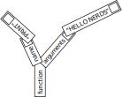
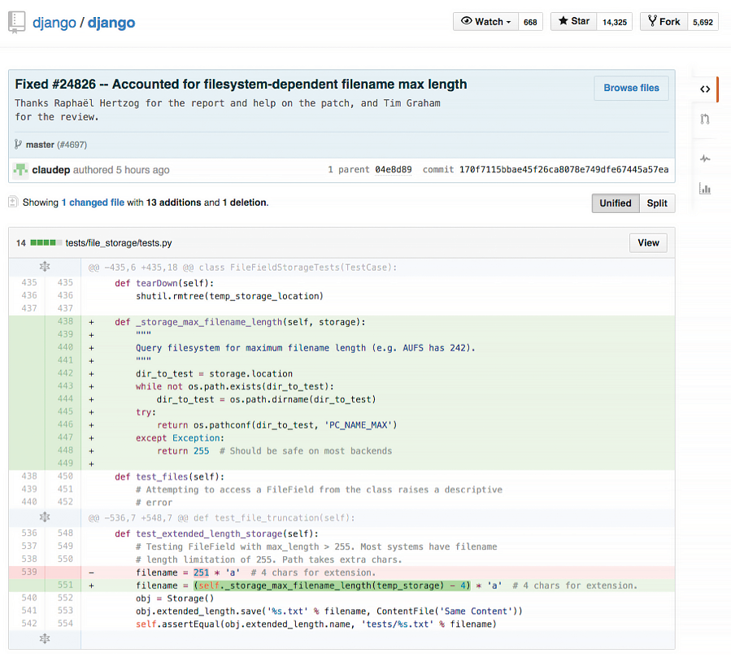

Software has been around since the 1940s. Which means that people have been faking their way through meetings about software, and the code that builds it, for generations. Now that software lives in our pockets, runs our cars and homes, and dominates our waking lives, ignorance is no longer acceptable. The world belongs to people who code. Those who don’t understand will be left behind.
This issue comprises a single story devoted to demystifying code and the culture of the people who make it. There’s some technical language along with a few pretty basic mathematical concepts. There are also lots of solid jokes and lasting insights. It may take a few hours to read, but that’s a small price to pay for adding decades to your career.
—Josh Tyrangiel
1 The Man in the Taupe Blazer
You are an educated, successful person capable of abstract thought. A VP doing an SVP’s job. Your office, appointed with decent furniture and a healthy amount of natural light filtered through vertical blinds, is commensurate with nearly two decades of service to the craft of management.
Copper plaques on the wall attest to your various leadership abilities inside and outside the organization: One, the Partner in Innovation Banquet Award 2011, is from the sales team for your support of its 18-month effort to reduce cycle friction—net sales increased 6.5 percent; another, the Civic Guidelight 2008, is for overseeing a volunteer team that repainted a troubled public school top to bottom.
You have a reputation throughout the organization as a careful person, bordering on penny-pinching. The way you’d put it is, you are loath to pay for things that can’t be explained. You expect your staff to speak in plain language. This policy has served you well in many facets of operations, but it hasn’t worked at all when it comes to overseeing software development.
For your entire working memory, some Internet thing has come along every two years and suddenly hundreds of thousands of dollars (inevitably millions) must be poured into amorphous projects with variable deadlines. Content management projects, customer relationship management integration projects, mobile apps, paperless office things, global enterprise resource planning initiatives—no matter how tightly you clutch the purse strings, software finds a way to pry open your fingers.
Here we go again. On the other side of your (well-organized) desk sits this guy in his mid-30s with a computer in his lap. He’s wearing a taupe blazer. He’s come to discuss spending large sums to create intangible abstractions on a “website re-architecture project.” He needs money, support for his team, new hires, external resources. It’s preordained that you’ll give these things to him, because the CEO signed off on the initiative—and yet should it all go pear-shaped, you will be responsible. Coders are insanely expensive, and projects that start with uncomfortably large budgets have an ugly tendency to grow from there. You need to understand where the hours will go.
He says: “We’re basically at the limits with WordPress.”
Who wears a taupe blazer?
The CTO was fired six months ago. That CTO has three kids in college and a mustache. It was a bad exit. The man in the taupe blazer (TMitTB) works for the new CTO. She comes from Adobe and has short hair and no mustache.
Here is what you’ve been told: All of the computer code that keeps the website running must be replaced. At one time, it was very valuable and was keeping the company running, but the new CTO thinks it’s garbage. She tells you the old code is spaghetti and your systems are straining as a result. That the third-party services you use, and pay for monthly, are old and busted. Your competitor has an animated shopping cart that drives across the top of the screen at checkout. That cart remembers everything customers have ever purchased and generates invoices on demand. Your cart has no memory at all.
Salespeople stomp around your office, sighing like theater students, telling you how embarrassed they are by the site. Nothing works right on mobile. Orders are cutting off halfway. People are logged out with no warning. Something must be done.
Which is why TMitTB is here.
Who’s he, anyway? Webmaster? IT? No, he’s a “Scrum Master.”
“My people are split on platform,” he continues. “Some want to use Drupal 7 and make it work with Magento—which is still PHP.” He frowns. “The other option is just doing the back end in Node.js with Backbone in front.”
You’ve furrowed your brow; he eyes you sympathetically and explains: “With that option it’s all JavaScript, front and back.”
Those are all terms you’ve heard. You’ve read the first parts of the Wikipedia pages and a book on software project estimation. It made some sense at the time.
You ask the universal framing question: “Did you cost these options?”
He gives you a number and a date. You know in your soul that the number is half of what it should be and that the project will go a year over schedule. He promises long-term efficiencies: The $85,000 in Oracle licenses will no longer be needed; engineering is moving to a free, open-sourced database. “We probably should have done that back when we did the Magento migration,” he says. Meaning, of course, that his predecessor probably should have done that.
You consult a spreadsheet and remind him that the Oracle contract was renewed a few months ago. So, no, actually, at least for now, you’ll keep eating that cost. Sigh.
This man makes a third less than you, and his education ended with a B.S. from a large, perfectly fine state university. But he has 500+ connections on LinkedIn. That plus sign after the “500” bothers you. How many more than 500 people does he know? Five? Five thousand?
In some mysterious way, he outranks you. Not within the company, not in restaurant reservations, not around lawyers. Still: He strokes his short beard; his hands are tanned; he hikes; his socks are embroidered with little ninja.
“Don’t forget,” he says, “we’ve got to budget for apps.”
This is real. A Scrum Master in ninja socks has come into your office and said, “We’ve got to budget for apps.” Should it all go pear-shaped, his career will be just fine.
You keep your work in perspective by thinking about barrels of cash. You once heard that a U.S. dry barrel can hold about $100,000 worth of singles. Next year, you’ll burn a little under a barrel of cash on Oracle. One barrel isn’t that bad. But it’s never one barrel. Is this a 5-barrel project or a 10-barreler? More? Too soon to tell. But you can definitely smell money burning.
At this stage in the meeting, you like to look supplicants in the eye and say, OK, you’ve given me a date and a budget. But when will it be done? Really, truly, top-line-revenue-reporting finished? Come to confession; unburden your soul.
This time you stop yourself. You don’t want your inquiry to be met by a patronizing sigh of impatience or another explanation about ship dates, Agile cycles, and continuous delivery. Better for now to hide your ignorance. When will it be done? You are learning to accept that the answer for software projects is never.

1.1 Why Are We Here?
We are here because the editor of this magazine asked me, “Can you tell me what code is?”
“No,” I said. “First of all, I’m not good at the math. I’m a programmer, yes, but I’m an East Coast programmer, not one of these serious platform people from the Bay Area.”
I began to program nearly 20 years ago, learning via oraperl, a special version of the Perl language modified to work with the Oracle database. A month into the work, I damaged the accounts of 30,000 fantasy basketball players. They sent some angry e-mails. After that, I decided to get better.
Which is to say I’m not a natural. I love computers, but they never made any sense to me. And yet, after two decades of jamming information into my code-resistant brain, I’ve amassed enough knowledge that the computer has revealed itself. Its magic has been stripped away. I can talk to someone who used to work at Amazon.com or Microsoft about his or her work without feeling a burning shame. I’d happily talk to people from Google and Apple, too, but they so rarely reenter the general population.
The World Wide Web is what I know best (I’ve coded for money in the programming languages Java, JavaScript, Python, Perl, PHP, Clojure, and XSLT), but the Web is only one small part of the larger world of software development. There are 11 million professional software developers on earth, according to the research firm IDC. (An additional 7 million are hobbyists.) That’s roughly the population of the greater Los Angeles metro area. Imagine all of L.A. programming. East Hollywood would be for Mac programmers, West L.A. for mobile, Beverly Hills for finance programmers, and all of Orange County for Windows.
There are lots of other neighborhoods, too: There are people who write code for embedded computers smaller than your thumb. There are people who write the code that runs your TV. There are programmers for everything. They have different cultures, different tribal folklores, that they use to organize their working life. If you told me a systems administrator was taking a juggling class, that would make sense, and I’d expect a product manager to take a trapeze class. I’ve met information architects who list and rank their friendships in spreadsheets. Security research specialists love to party.
What I’m saying is, I’m one of 18 million. So that’s what I’m writing: my view of software development, as an individual among millions. Code has been my life, and it has been your life, too. It is time to understand how it all works.
Every month it becomes easier to do things that have never been done before, to create new kinds of chaos and find new kinds of order. Even though my math skills will never catch up, I love the work. Every month, code changes the world in some

2 Let’s Begin
A computer is a clock with benefits. They all work the same, doing second-grade math, one step at a time: Tick, take a number and put it in box one. Tick, take another number, put it in box two. Tick, operate (an operation might be addition or subtraction) on those two numbers and put the resulting number in box one. Tick, check if the result is zero, and if it is, go to some other box and follow a new set of instructions.
You, using a pen and paper, can do anything a computer can; you just can’t do those things billions of times per second. And those billions of tiny operations add up. They can cause a phone to boop, elevate an elevator, or redirect a missile. That raw speed makes it possible to pull off not one but multiple sleights of hand, card tricks on top of card tricks. Take a bunch of pulses of light reflected from an optical disc, apply some math to unsqueeze them, and copy the resulting pile of expanded impulses into some memory cells—then read from those cells to paint light on the screen. Millions of pulses, 60 times a second. That’s how you make the rubes believe they’re watching a movie.
Apple has always made computers; Microsoft used to make only software (and occasional accessory hardware, such as mice and keyboards), but now it’s in the hardware business, with Xbox game consoles, Surface tablets, and Lumia phones. Facebook assembles its own computers for its massive data centers.
So many things are computers, or will be. That includes watches, cameras, air conditioners, cash registers, toilets, toys, airplanes, and movie projectors. Samsung makes computers that look like TVs, and Tesla makes computers with wheels and engines. Some things that aren’t yet computers—dental floss, flashlights—will fall eventually.
When you “batch” process a thousand images in Photoshop or sum numbers in Excel, you’re programming, at least a little. When you use computers too much—which is to say a typical amount—they start to change you. I’ve had Photoshop dreams, Visio dreams, spreadsheet dreams, and Web browser dreams. The dreamscape becomes fluid and can be sorted and restructured. I’ve had programming dreams where I move text around the screen.
You can make computers do wonderful things, but you need to understand their limits. They’re not all-powerful, not conscious in the least. They’re fast, but some parts—the processor, the RAM—are faster than others—like the hard drive or the network connection. Making them seem infinite takes a great deal of work from a lot of programmers and a lot of marketers.
The turn-of-last-century British artist William Morris once said you can’t have art without resistance in the materials. The computer and its multifarious peripherals are the materials. The code is the art.
2.1 How Do You Type an “A”?
Consider what happens when you strike a key on your keyboard. Say a lowercase “a.” The keyboard is waiting for you to press a key, or release one; it’s constantly scanning to see what keys are pressed down. Hitting the key sends a scancode.
Just as the keyboard is waiting for a key to be pressed, the computer is waiting for a signal from the keyboard. When one comes down the pike, the computer interprets it and passes it farther into its own interior. “Here’s what the keyboard just received—do with this what you will.”
It’s simple now, right? The computer just goes to some table, figures out that the signal corresponds to the letter “a,” and puts it on screen. Of course not—too easy. Computers are machines. They don’t know what a screen or an “a” are. To put the “a” on the screen, your computer has to pull the image of the “a” out of its memory as part of a font, an “a” made up of lines and circles. It has to take these lines and circles and render them in a little box of pixels in the part of its memory that manages the screen. So far we have at least three representations of one letter: the signal from the keyboard; the version in memory; and the lines-and-circles version sketched on the screen. We haven’t even considered how to store it, or what happens to the letters to the left and the right when you insert an “a” in the middle of a sentence. Or what “lines and circles” mean when reduced to binary data. There are surprisingly many ways to represent a simple “a.” It’s amazing any of it works at all.
Coders are people who are willing to work backward to that key press. It takes a certain temperament to page through standards documents, manuals, and documentation and read things like “data fields are transmitted least significant bit first” in the interest of understanding why, when you expected “ü,” you keep getting “�.”
2.2 From Hardware to Software
Hardware is a tricky business. For decades the work of integrating, building, and shipping computers was a way to build fortunes. But margins tightened. Look at Dell, now back in private hands, or Gateway, acquired by Acer. Dell and Gateway, two world-beating companies, stayed out of software, typically building PCs that came preinstalled with Microsoft Windows—plus various subscription-based services to increase profits.
This led to much cursing from individuals who’d spent $1,000 or more on a computer and now had to figure out how to stop the antivirus software from nagging them to pay up.
Years ago, when Microsoft was king, Steve Ballmer, sweating through his blue button-down, jumped up and down in front of a stadium full of people and chanted, “Developers! Developers! Developers! Developers!”
He yelled until he was hoarse: “I love this company!” Of course he did. If you can sell the software, if you can light up the screen, you’re selling infinitely reproducible nothings. The margins on nothing are great—until other people start selling even cheaper nothings or giving them away. Which is what happened, as free software-based systems such as Linux began to nibble, then devour, the server market, and free-to-use Web-based applications such as Google Apps began to serve as viable replacements for desktop software.
Expectations around software have changed over time. IBM unbundled software from hardware in the 1960s and got to charge more; Microsoft rebundled Internet Explorer with Windows in 1998 and got sued; Apple initially refused anyone else the ability to write software for the iPhone when it came out in 2007, and then opened the App Store, which expanded into a vast commercial territory—and soon the world had Angry Birds. Today, much hardware comes with some software—a PC comes with an operating system, for example, and that OS includes hundreds of subprograms, from mail apps to solitaire. Then you download or buy more.
There have been countless attempts to make software easier to write, promising that you could code in plain English, or manipulate a set of icons, or make a list of rules—software development so simple that a bright senior executive or an average child could do it. Decades of efforts have gone into helping civilians write code as they might use a calculator or write an e-mail. Nothing yet has done away with developers, developers, developers, developers.
Thus a craft, and a professional class that lives that craft, emerged. Beginning in the 1950s, but catching fire in the 1980s, a proportionally small number of people became adept at inventing ways to satisfy basic human desires (know the time, schedule a flight, send a letter, kill a zombie) by controlling the machine. Coders, starting with concepts such as “signals from a keyboard” and “numbers in memory,” created infinitely reproducible units of digital execution that we call software, hoping to meet the needs of the marketplace. Man, did they. The systems they built are used to manage the global economic infrastructure.1 If coders don’t run the world, they run the things that run the world.
Most programmers aren’t working on building a widely recognized application like Microsoft Word. Software is everywhere. It’s gone from a craft of fragile, built-from-scratch custom projects to an industry of standardized parts, where coders absorb and improve upon the labors of their forebears (even if those forebears are one cubicle over). Software is there when you switch channels and your cable box shows you what else is on. You get money from an ATM—software. An elevator takes you up five stories—the same. Facebook releases software every day to something like a billion people, and that software runs inside Web browsers and mobile applications. Facebook looks like it’s just pictures of your mom’s crocuses or your son’s school play—but no, it’s software.
2.3 How Does Code Become Software?
We know that a computer is a clock with benefits, and that software starts as code, but how?
We know that someone, somehow, enters a program into the computer and the program is made of code. In the old days, that meant putting holes in punch cards. Then you’d put the cards into a box and give them to an operator who would load them, and the computer would flip through the cards, identify where the holes were, and update parts of its memory, and then it would—OK, that’s a little too far back. Let’s talk about modern typing-into-a-keyboard code. It might look like this:
ispal: {x~|x}That’s in a language called, simply, K, famous for its brevity. 2
That code will test if something is a palindrome. If you next typed in ispal "able was i ere i saw elba", K will confirm that yes, this is a palindrome.
So how else might your code look? Maybe like so, in Excel (with all the formulas hidden away under the numbers they produce, and a check box that you can check):
But Excel spreadsheets are tricky, because they can hide all kinds of things under their numbers. This opacity causes risks. One study by a researcher at the University of Hawaii found that 88 percent of spreadsheets contain errors.
Programming can also look like Scratch, a language for kids:

That’s definitely programming right there—the computer is waiting for a click, for some input, just as it waits for you to type an “a,” and then it’s doing something repetitive, and it involves hilarious animals.
Or maybe:
PRINT *, "WHY WON'T IT WORK
END
That’s in Fortran. The reason it’s not working is that you forgot to put a quotation mark at the end of the first line. Try a little harder, thanks.
All of these things are coding of one kind or another, but the last bit is what most programmers would readily identify as code. A sequence of symbols (using typical keyboard characters, saved to a file of some kind) that someone typed in, or copied, or pasted from elsewhere. That doesn’t mean the other kinds of coding aren’t valid or won’t help you achieve your goals. Coding is a broad human activity, like sport, or writing. When software developers think of coding, most of them are thinking about lines of code in files. They’re handed a problem, think about the problem, write code that will solve the problem, and then expect the computer to turn word into deed.
Code is inert. How do you make it ert? You run software that transforms it into machine language. The word “language” is a little ambitious here, given that you can make a computing device with wood and marbles. Your goal is to turn your code into an explicit list of instructions that can be carried out by interconnected logic gates, thus turning your code into something that can be executed—software.
A compiler is software that takes the symbols you typed into a file and transforms them into lower-level instructions. Imagine a programming language called Business Operating Language United System, or Bolus. It’s a terrible language that will have to suffice for a few awkward paragraphs. It has one real command, PRINT. We want it to print HELLO NERDS on our screen. To that end, we write a line of code in a text file that says:
PRINT {HELLO NERDS}And we save that as nerds.bol. Now we run gnubolus nerds.bol, our imaginary compiler program. How does it start? The only way it can: by doing lexical analysis, going character by character, starting with the “p,” grouping characters into tokens, saving them into our one-dimensional tree boxes. Let’s be the computer.
| Character | Meaning |
|---|---|
| P | Hmmmm...? |
| R | Someone say something? |
| I | I’m waiting... |
| N | [drums fingers] |
| T | Any time now... |
| Space | Ah, "PRINT" |
| { | String coming! |
| H | These |
| E | letters |
| L | don’t |
| L | matter |
| O | la |
| Space | la |
| N | just |
| E | saving |
| R | them |
| D | for |
| S | later |
| } | Stringtime is over! |
| End of file | Time to get to work. |
The reason I’m showing it to you is so you can see how every character matters. Computers usually “understand” things by going character by character, bit by bit, transforming the code into other kinds of code as they go. The Bolus compiler now organizes the tokens into a little tree. Kind of like a sentence diagram. Except instead of nouns, verbs, and adjectives, the computer is looking for functions and arguments. Our program above, inside the computer, becomes this:
Trees are a really pleasant way of thinking of the world. Your memo at work has sections that have paragraphs? Tree. Your e-mail program contains messages that contain subject lines and addresses? Tree. Your favorite software program that has a menu bar with individual items that have subitems? Tree. Every day is Arbor Day in Codeville.
Of course, it’s all a trick. If you cut open a computer, you’ll find countless little boxes in rows, places where you can put and retrieve bytes. Everything ultimately has to get down to things in little boxes pointing to each other. That’s just how things work. So that tree is actually more like this:
Every character truly, truly matters. Every single stupid misplaced semicolon, space where you meant tab, bracket instead of a parenthesis—mistakes can leave the computer in a state of panic. The trees don’t know where to put their leaves. Their roots decay. The boxes don’t stack neatly. For not only are computers as dumb as a billion marbles, they’re also positively Stradivarian in their delicacy.
That process of going character by character can be wrapped up into a routine—also called a function, a method, a subroutine, or component. (Little in computing has a single, reliable name, which means everyone is always arguing over semantics.) And that routine can be run as often as you need. Second, you can print anything you wish, not just one phrase. Third, you can repeat the process forever, and nothing will stop you until the machine breaks or, barring that, heat death of the universe. Obviously no one besides Jack Nicholson in The Shining really needs to keep typing the same phrase over and over, and even then it turned out to be a bad idea.
Instead of worrying about where the words are stored in memory and having to go character by character, programming languages let you think of things like strings, arrays, and trees. That’s what programming gives you. You may look over a programmer’s shoulder and think the code looks complex and boring, but it’s covering up repetitive boredom that’s unimaginably vast.3
This thing we just did with individual characters, compiling a program down into a fake assembly language so that the nonexistent computer can print each character one at a time? The same principle applies to every pixel on your screen, every frequency encoded in your MP3 files, and every imaginary cube in Minecraft. Computing treats human language as an arbitrary set of symbols in sequences. It treats music, imagery, and film that way, too.
It’s a good and healthy exercise to ponder what your computer is doing right now. Maybe you’re reading this on a laptop: What are the steps and layers between what you’re doing and the Lilliputian mechanisms within? When you double-click an icon to open a program such as a word processor, the computer must know where that program is on the disk. It has some sort of accounting process to do that. And then it loads that program into its memory—which means that it loads an enormous to-do list into its memory and starts to step through it. What does that list look like?
Maybe you’re reading this in print. No shame in that. In fact, thank you. The paper is the artifact of digital processes. Remember how we put that “a” on screen? See if you can get from some sleepy writer typing that letter on a keyboard in Brooklyn, N.Y., to the paper under your thumb. What framed that fearful symmetry?
Thinking this way will teach you two things about computers: One, there’s no magic, no matter how much it looks like there is. There’s just work to make things look like magic. And two, it’s crazy in there.
2.4 What Is an Algorithm?
“Algorithm” is a word writers invoke to sound smart about technology. Journalists tend to talk about “Facebook’s algorithm” or a “Google algorithm,” which is usually inaccurate. They mean “software.”
Algorithms don’t require computers any more than geometry does. An algorithm solves a problem, and a great algorithm gets a name. Dijkstra’s algorithm, after the famed computer scientist Edsger Dijkstra, finds the shortest path in a graph. By the way, “graph” here doesn’t mean but rather .
Think of a map; streets connect to streets at intersections. It’s a graph! There are graphs all around you. Plumbing, electricity, code compilation, social networks, the Internet, all can be represented as graphs! (Now to monetize …)
Many algorithms have their own pages on Wikipedia. You can spend days poking around them in wonder. Euclid’s algorithm, for example, is the go-to specimen that shows up whenever anyone wants to wax on about algorithms, so why buck the trend? It’s a simple way of determining the greatest common divisor for two numbers. Take two numbers, like 16 and 12. Divide the first by the second. If there’s a remainder (in this case there is, 4), divide the smaller number, 12, by that remainder, 4, which gives you 3 and no remainder, so we’re done—and 4 is the greatest common divisor.Δ (Now translate that into machine code, and we can get out of here.)
There’s a site called Rosetta Code that shows you different algorithms in different languages. The Euclid’s algorithm page is great. Some of the examples are suspiciously long and laborious, and some are tiny nonsense poetry, like this one, in the language Forth:4
: gcd ( a b -- n )
begin dup while tuck mod repeat drop ;Read it out loud, preferably to friends. Forth is based on the concept of a stack, which is a special data structure. You make “words” that do things on the stack, building up a little language of your own. PostScript,5 the language of laser printers, came after Forth but is much like it. Look at how similar the code is, give or take some squiggles:
/gcd {
{
{0 gt} {dup rup mod} {pop exit} ifte
} loop
}.And that’s Euclid’s algorithm in PostScript. I admit, this might be fun only for me. Here it is in Python (all credit to Rosetta Code):
def gcd(u, v):
return gcd(v, u % v) if v else abs(u)A programming language is a system for encoding, naming, and organizing algorithms for reuse and application. It’s an algorithm management system. This is why, despite the hype, it’s silly to say Facebook has an algorithm. An algorithm can be translated into a function, and that function can be called (run) when software is executed. There are algorithms that relate to image processing and for storing data efficiently and for rapidly running through the elements of a list. Most algorithms come for free, already built into a programming language, or are available, organized into libraries, for download from the Internet in a moment. You can do a ton of programming without actually thinking about algorithms—you can save something into a database or print a Web page by cutting and pasting code. But if you want the computer to, say, identify whether it’s reading Spanish or Italian, you’ll need to write a language-matching function. So in that sense, algorithms can be pure, mathematical entities as well as practical expressions of ideas on which you can place your grubby hands.
Dijkstra distributed a remarkable and challenging set of at least 1318 memos to the global computer science community, starting in the 1960s and continuing up until his death in 2002, known as “EWDs,” many of them handwritten.Δ
One thing that took me forever to understand is that computers aren’t actually “good at math.” They can be programmed to execute certain operations to certain degrees of precision, so much so that it looks like “doing math” to humans.6 Dijkstra said: “Computer science is no more about computers than astronomy is about telescopes.”7 A huge part of computer science is about understanding the efficiency of algorithms—how long they will take to run. Computers are fast, but they can get bogged down—for example, when trying to find the shortest path between two points on a large map. Companies such as Google, Facebook, and Twitter are built on top of fundamental computer science8 and pay great attention to efficiency, because their users do things (searches, status updates, tweets) an extraordinary number of times. Thus it’s absolutely worth their time to find excellent computer scientists, many with doctorates, who know where all the efficiencies are buried.
It takes a good mathematician to be a computer scientist, but a middling one to be an effective programmer. Until you start dealing with millions of people on a network or you need to blur or sharpen a million photos quickly, you can just use the work of other people. When it gets real, break out the comp sci. When you’re doing anything a hundred trillion times, nanosecond delays add up. Systems slow down, users get cranky, money burns by the barrel.9
The hardest work in programming is getting around things that aren’t computable, in finding ways to break impossible tasks into small, possible components, and then creating the impression that the computer is doing something it actually isn’t, like having a human conversation. This used to be known as “artificial intelligence research,” but now it’s more likely to go under the name “machine learning” or “data mining.” When you speak to Siri or Cortana and they respond, it’s not because these services understand you; they convert your words into text, break that text into symbols, then match those symbols against the symbols in their database of terms, and produce an answer. Tons of algorithms, bundled up and applied, mean that computers can fake listening.
A programming language has at least two jobs, then. It needs to wrap up lots of algorithms so they can be reused. Then you don’t need to go looking for a square-root algorithm (or a genius programmer) every time you need a square root. And it has to make it easy for programmers to wrap up new algorithms and routines into functions for reuse. The DRY principle, for Don’t Repeat Yourself, is one of the colloquial tenets of programming. That is, you should name things once, do things once, create a function once, and let the computer repeat itself. This doesn’t always work. Programmers repeat themselves constantly. I’ve written certain kinds of code a hundred times. This is why DRY is a principle.
Enough talk. Let’s code!
2.5 The Sprint
After a few months the budget is freed up, and the Web re-architecture project is under way. They give it a name: Project Excelsior. Fine. TMitTB (who, to be fair, has other clothes and often dresses like he’s in Weezer) checks in with you every week.
He brings documents. Every document has its own name. The functional specification is a set of at least a thousand statements about users clicking buttons. “Upon accessing the Web page the user if logged in will be identified by name and welcomed and if not logged in will be encouraged to log in or create an account. (See user registration workflow.)”
God have mercy on our souls. From there it lists various error messages. It’s a sort of blueprint in that it describes—in words, with occasional diagrams—a program that doesn’t exist.
Some parts of the functional specification refer to “user stories,” tiny hypothetical narratives about people using the site, e.g., “As a visitor to the website, I want to search for products so I can quickly purchase what I want.” 10
Then there’s something TMitTB calls wireframe mock-ups, which are pictures of how the website will look, created in a program that makes everything seem as if it were sketched by hand, all a little squiggly—even though it was produced on a computer. This is so no one gets the wrong idea about these ideas-in-progress and takes them too seriously. Patronizing, but point taken.
You rarely see TMitTB in person, because he’s often at conferences where he presents on panels. He then tweets about the panels and notes them on his well-populated LinkedIn page. Often he takes a picture of the audience from the stage, and what you see is an assembly of mostly men, many with beards, the majority of whom seem to be peering into their laptop instead of up at the stage. Nonetheless the tweet that accompanies that photo says something like, “AMAZING audience! @ the panel on #microservice architecture at #ArchiCon2015.”
He often tells you just how important this panel-speaking is for purposes of recruiting. Who’s to say he is wrong? It costs as much to hire a senior programmer as it does to hire a midlevel executive, so maybe going to conferences is his job, and in the two months he’s been here he’s hired four people. His two most recent hires have been in Boston and Hungary, neither of which is a place where you have an office.
But what does it matter? Every day he does a 15-minute “standup” meeting via something called Slack, which is essentially like Google Chat but with some sort of plaid visual theme, and the programmers seem to agree that this is a wonderful and fruitful way to work.
“I watch the commits,” TMitTB says. Meaning that every day he reviews the code that his team writes to make sure that it’s well-organized. “No one is pushing to production without the tests passing. We’re good.”
Your meetings, by comparison, go for hours, with people arranged around a table—sitting down. You wonder how he gets his programmers to stand up, but then some of them already use standing desks. Perhaps that’s the ticket.
Honestly, you would like to go to conferences sometimes and be on panels. You could drink bottled water and hold forth just fine.
2.6 What’s With All These Conferences, Anyway?
Conferences! The website Lanyrd lists hundreds of technology conferences for June 2015. There’s an event for software testers in Chicago, a Twitter conference in São Paulo, and one on enterprise content management in Amsterdam. In New York alone there’s the Big Apple Scrum Day, the Razorfish Tech Summit, an entrepreneurship boot camp for veterans, a conference dedicated to digital mapping, many conferences for digital marketers, one dedicated to Node.js, one for Ruby, and one for Scala (these are programming languages), a couple of breakfasts, a conference for cascading style sheets, one for text analytics, and something called the Employee Engagement Awards.
Tech conferences look like you’d expect. Tons of people at a Sheraton, keynote in Ballroom D. Or enormous streams of people wandering through South by Southwest in Austin. People come together in the dozens or thousands and attend panels, ostensibly to learn; they attend presentations and brush up their skills, but there’s a secondary conference function, one of acculturation. You go to a technology conference to affirm your tribal identity, to transfer out of the throng of dilettantes and into the zone of the professional. You pick up swag and talk to vendors, if that’s your thing.


First row: TechCrunch Disrupt NYC, May 2011; Google I/O developers conference, San Francisco, May 2013; Global Mobile Internet Conference, Beijing, April 2015
Second row: Nvidia GPU, San Jose, September 2010; South by Southwest (SXSW) Interactive Festival, Austin, March 2013; Apple Worldwide Developers Conference (WWDC), San Francisco, June 2008
Third row: TechCrunch Disrupt NYC, May 2012; Re:publica conference, Berlin, May 2015; TechCrunch Disrupt NYC, May 2015
Fourth row: SXSW Interactive Festival, Austin, March 2014; WWDC, San Francisco, June 2015; Bloomberg Technology Conference!, San Francisco, June 15-16
Technology conferences are where primate dynamics can be fully displayed, where relationships of power and hierarchy can be established. There are keynote speakers—often the people who created the technology at hand or crafted a given language. There are the regular speakers, often paid not at all or in airfare, who present some idea or technique or approach. Then there are the panels, where a group of people are lined up in a row and forced into some semblance of interaction while the audience checks its e-mail.
I’m a little down on panels. They tend to drift. I’m not sure why they exist.
Here’s the other thing about technology conferences: There has been much sexual harassment and much sexist content in conferences. Which is stupid, because computers are dumb rocks lacking genitalia, but there you have it.
Women in software, having had enough, started to write it up, post to blogs. Other women did the same. The problem is pervasive: There are a lot of conferences, and there have been many reports of harassing behavior. The language Ruby, the preferred language for startup bros, developed the worst reputation. At a Ruby conference in 2009, someone gave a talk subtitled “Perform Like a Pr0n Star,” with sexy slides. That was dispiriting. There have been criminal incidents, too.
Conferences began to develop codes of conduct, rules and algorithms for people (men, really) to follow.
If you are subject to or witness unacceptable behavior, or have any other concerns, please notify a community organizer as soon as possible …
php[architect] is dedicated to providing a harassment-free event experience for everyone and will not tolerate harassment or offensive behavior in any form.
The Atlanta Java Users Group (AJUG) is dedicated to providing an outstanding conference experience for all attendees, speakers, sponsors, volunteers, and organizers involved in DevNexus (GeekyNerds) regardless of gender, sexual orientation, disability, physical appearance, body size, race, religion, financial status, hair color (or hair amount), platform preference, or text editor of choice.
When people started talking about conference behavior, they also began to talk about the larger problems of programming culture. This was always an issue, but the conference issues gave people a point of common reference. Why were there so many men in this field? Why do they behave so strangely? Why is it so hard for them to be in groups with female programmers and behave in a typical, adult way?

“I go to work and I stick out like a sore thumb. I have been mistaken for an administrative assistant more than once. I have been asked if I was physical security (despite security wearing very distinctive uniforms),” wrote Erica Joy Baker on Medium.com who has worked, among other places, at Google.Δ
Famous women in coding history
Ada Lovelace: The first programmer. She devised algorithms for Charles Babbage’s “analytical engine,” which he never built.
Grace Murray Hopper: World War II hero and inventor of the compiler.

“Always the only woman in the meeting, often the first—the first female R&D engineer, first female project lead, first female software team lead—in the companies I worked for,” wrote another woman in Fast Company magazine.
Fewer than a fifth of undergraduate degrees in computer science awarded in 2012 went to women, according to the National Center for Women & Information Technology. Less than 30 percent of the people in computing are women. And the number of women in computing has fallen since the 1980s, even as the market for their skills has expanded. The pipeline is a huge problem. And yet it’s not unsolvable. I’ve met managers who have built perfectly functional large teams that are more than half female coders. Places such as the handicrafts e-commerce site Etsy have made a particular effort to develop educational programs and mentorship programs. Organizations such as the not-for-profit Girl Develop It teach women, and just women, how to create software.
It’s all happening very late in the boom, though. In 2014 some companies began to release diversity reports for their programming teams. It wasn’t a popular practice, but it was revealing. Intel is 23 percent female; Yahoo! is 37 percent. Apple, Facebook, Google, Twitter, and Microsoft are all around 30 percent. These numbers are for the whole companies, not only programmers. That’s a lot of women who didn’t get stock options. The numbers of people who aren’t white or Asian are worse yet. Apple just gave $50 million to fund diversity initiatives, equivalent to 0.007 percent of its market cap. Intel has a $300 million diversity project.
The average programmer is moderately diligent, capable of basic mathematics, has a working knowledge of one or more programming languages, and can communicate what he or she is doing to management and his or her peers. Given that a significant number of women work as journalists and editors, perform surgery, run companies, manage small businesses, and use spreadsheets, that a few even serve on the Supreme Court, and that we are no longer surprised to find women working as accountants, professors, statisticians, or project managers, it’s hard to imagine that they can’t write JavaScript. Programming, despite the hype and the self-serving fantasies of programmers the world over, isn’t the most intellectually demanding task imaginable.
Which leads one to the inescapable conclusion: The problem with women in technology isn’t the women.
3 Why Are Programmers So Intense About Languages?
Many conferences are organized around specific programming languages or specific communities (PyCon for Python programmers; the Strata conference for big data; Oscon for open-source coders); these are ritual events for the people in those communities. Attendees gather, talk, and post the videos on YouTube. Language matters.
Programmers track the success of computer languages the way other people track sports rankings, commenting on Web forums such as Reddit (where many languages get their own “subreddit,” and reddit.com/r/programming currently has 620,202 readers), or Hacker News, run by the venture capital firm Y Combinator (a company named after a special kind of function that operates on other functions), or Lambda the Ultimate (named after a series of papers written mostly in the 1970s about the influential programming language Scheme—the more inside-baseball the name, the nerdier the subject matter).
There are hundreds of programming blogs. Many large corporations let their engineers blog (a generous gift, given how many recruiters are hovering). Discussions about programming go on everywhere, in public, at all times, about hundreds of languages. There is a keen sense of what’s coming up and what’s fading out.
It’s not simply fashion; one’s career as a programmer depends on demonstrating capacity in one or more languages. So there are rankings, frequently updated, rarely shocking. As of April 15, the world’s most-used computer languages, according to the Tiobe index (which uses a variety of indicators to generate a single ranking for the world of programming), are Java, C, C++, Objective-C, and C#, followed by JavaScript, PHP, and Python. The rankings are necessarily inexact; another list, by a consulting firm called RedMonk, gives JavaScript the top spot, followed by Java. There are many possible conclusions here, but the obvious one is that, all things being equal, a very good Java programmer who performs well in interviews will have more career options than a similar candidate using a more obscure language.
If you code, by the time a language breaks through to the top 10 or 20, you’ve heard of it, read blog posts about it, heard people lament how terrible or wonderful or misguided it is, possibly watched a few video tutorials, or played with it a little. Taking new languages out for a spin is a good thing for a programmer to do. Often all you have to do is download some files and write a couple lines of code, then decide if you want to go further. Most languages are free to download and use.
Why do people construct and then give away free languages? Well, the creation of a good computer language is the work of an apex programmer. To have produced a successful language is acknowledged as a monumental effort, akin to publishing a multivolume history of a war, or fighting in one. The reward is glory.
Changing a language is like fighting that war all over again, and some languages have at times been trapped in a liminal state between their old, busted selves, and their new, promised version. Perl 5, released in the mid-1990s, was a language uniquely suited to the World Wide Web, and it grew as the Web grew; Perl 6 was supposed to be better in every way, and a redesign began with grand pronouncements in 2000. But after 15 years of people working continually and often for free on a project they consider in the public interest, there’s still no official Perl 6. (Latest ETA: Christmas 2015.)
The Python language community, keenly aware of the Perl community’s problems, decided to make necessary but difficult changes to the language as part of the transition from Version 2 to Version 3. They would modernize, clean up rough edges—but avoid grand reinventions. Development of Python 3.0 started in 2006; the first working version came out in 2008; and in 2015, the transition is ongoing.
Making a new language is hard. Making a popular language is much harder still and requires the smile of fortune. And changing the way a popular language works appears to be one of the most difficult things humans can do, requiring years of coordination to make the standards align. Languages are large, complex, dynamic expressions of human culture.
3.1 The Beauty of the Standard Library
The true measure of a language isn’t how it uses semicolons; it’s the standard library of each language. A language is software for making software. The standard library is a set of premade software that you can reuse and reapply.
Take Python, which is “batteries included,” meaning that it comes with tons of preexisting code, organized into “modules,” that you can reuse. Its standard library has functions that let you copy Web pages or replace words in a document.
What does that mean, to process text? Well, you might have a string of text (The Quick Brown Fox) and save it in a variable called my_string. So now you can call standard methods on that string. You can say my_string.lower(), and it will make all the words lowercase, producing “the quick brown fox.”
Truly understanding a language’s standard library is one of the ways one becomes proficient in that language. Typically you just visit Web pages or read a book.
But the standard library is only the beginning. For many languages—and Python is exemplary—there’s an enormous library of prewritten modules available for nearly instantaneous download, using “package manager” software. A module (or library, or package) is code that is intended to extend a language’s capabilities.
Let’s say you work for an advertising agency and need to process through 100,000 pictures and scale and sharpen them.
You type one command: sudo pip install Pillow, and the Pillow module is downloaded, compiled automatically, and placed into the correct directory for later reuse. You have to know, of course, that most modern languages have modules for image processing; you also need to know that Pillow is the most commonly used image-processing toolkit. Knowing how to find that out is part of the job of coding. You might learn it by Googling. You might ask a friend. You might get that information out of a book, or a website like The Hitchhiker’s Guide to Python.
A coder needs to be able to quickly examine and identify which giant, complex library is the one that’s the most recently and actively updated and the best match for his or her current needs. A coder needs to be a good listener.
But what a payoff! Now that Pillow is installed, you have, at your typing fingertips, dozens of routines and functions related to image processing that you can use in your code: change colors, rotate by a number of degrees, scale, convert GIF images to JPEGs, and so forth. Or if you need to do very complex numerical analysis and statistics work, you can download NumPy, and suddenly an enormous range of mathematical algorithms are available to you, hundreds of years of science and research boiled down. Audio processing, interacting with peculiar hardware, speaking to databases—there are packages for all of these things. But you need to know how to find them, what they are called. Code isn’t just obscure commands in a file. It requires you to have a map in your head, to know where the good libraries, the best documentation, and the most helpful message boards are located. If you don’t know where those things are, you will spend all of your time searching, instead of building cool new things.
3.2 What Do Different Languages Do?
If all computer languages do the same thing (make the computer do what you want), then why does it matter which one you choose? For the same reason that you wouldn’t take a bicycle to pick up a fridge or get a physical from an oncological neurosurgeon. Some tools are better for certain jobs.
It’s possible for a C programmer and a Java programmer to read each other’s code, but it’s harder to make C code and Java code work together. C and Java represent the world in different ways, structure data in different ways, and address the components of the computer in different ways. There are true benefits to everyone on a team using the same language. They’re all thinking the same way about how to instruct the computer to process data.
It’s not necessary for every team across a big organization to use the same language. In fact, it’s often counterproductive. Large organizations have lots of needs and use many languages and services to meet them. For example, Etsy is built atop PHP—but its product-search service uses Java libraries, because the solutions for search available in Java are great.
Some programming languages, such as C, will do their best to do exactly as you ask, even if that means crashing your computer. Others, like OCaml and Haskell, are very constrained and ask a programmer to hew to a narrow form, trying to steer you away from anything stupid.11
Some languages have cute logos, like the Go gopher.

There’s Scratch, a teaching language for kids. It doesn’t use text much at all but allows li’l coders to move icons around on screen and assemble programs like Legos. Its logo is a smiling cat on two legs.

And then there’s Lisp, which didn’t come with a logo when it was first proposed in the 1950s but now has a community-created five-eyed alien holding a flag with its proboscis. Lisp is a classic language. There are some languages that just have authority, elegance—canonical computer languages.

And one of these is C. Most of the popular languages look a lot like it. C’s de facto logo is, well, the letter C. C is called C because it came after another language. That language was called B.
3.3 The Importance of C
C is as big a deal as you can get in computing. Created by Dennis Ritchie starting in the late 1960s at Bell Labs, it’s the principal development language of the UNIX operating system. Unix (lowercased now, to refer to the idea of Unix instead of the branded version) is a simple operating system—basically it’s a kernel12 that manages memory and runs software, a large collection of very small utility programs, and a “shell” that helps you knit programs into “shell scripts.” If you couldn’t do what you needed with shell scripts, you might write a new utility in C and add it to the utility library. This was a nice and practical way of working, and it coincided with the rise of various kinds of networks that today we refer to collectively as the Internet. So Unix spread from Bell Labs to academia, to large industrial systems, and eventually leached into the water supply of computing until it was everywhere. And everywhere that Unix went, C was sure to go.
C is a simple language, simple like a shotgun that can blow off your foot. It allows you to manage every last part of a computer—the memory, files, a hard drive—which is great if you’re meticulous and dangerous if you’re sloppy. Software made in C is known for being fast. When you compile C, it doesn’t simply become a bunch of machine language in one go; there are many steps to making it really, ridiculously fast. These are called optimizations, and they are to programming what loopholes are to taxes. Think of C as sort of a plain-spoken grandfather who grew up trapping beavers and served in several wars but can still do 50 pullups.
C’s legendary, lucid manual and specification, The C Programming Language, written by Ritchie and Brian Kernighan (known by its nickname, K&R), is a quick and simple read—physically light in comparison with modern, heavy-stock guides to programming on bookstore shelves. This recommended text was published in 1978, when personal computing barely existed, back when a computer was a large piece of industrial equipment used to control a refrigeration system or calculate actuarial tables. It was in K&R that “Hello, world!” became the canonical example program for any language. By convention, almost every introduction to any programming language since then starts with a variation on “Hello, world!”
Here is the ur-text of computational self-introduction:
#include <stdio.h>
int main()
{
printf("Hello, world!\n");
}Which will, when compiled and run, print “Hello, world!” to the screen. Let’s write a program where you give it a number x and it prints out all the squares of the numbers from 1 to x—just the sort of practical, useful program that always appears in programming tutorials to address the needs of people who urgently require a list of squares.
#include<stdio.h>
void squares(int v)
{
for (int i=1;i<v+1;i++) {
printf("%d ", i*i);
}
printf("\n");
}
int main()
{
squares(10);
}
To compile this program on a Macintosh, I saved it as squares.c and opened up Terminal.app and typed:
gcc squares.c
$ ./a.outAnd it produced:
1 4 9 16 25 36 49 64 81 100That runs the GNU C Compiler and produces a default file called a.out, which I ran on the command line,
13
to get my squared numbers, and bully for me. If I wanted to change the code, I would run the commands, and the program would update accordingly.
This isn’t great code by any stretch. 14 You just need to squint a little to see that there are small, repeatable units that fit together in certain ways. There’s a function called squares. That’s the important part. You feed it a number, an integer. Then it counts from 1 to that integer and with each count it prints the square of that number. Then it prints a new line. Done.
The Linux kernel is written in C. The software that connects your printer to your computer could be in C. The Web servers that serve up your Web pages are often written in C. It’s also a good language for writing other languages—Python, PHP, and Perl are written in C, as are many others. C is a language you use for building systems; it has the same role in computing that Latin did among Renaissance academics. You won’t often meet a serious practitioner of the digital arts who doesn’t have at least a passing familiarity. The more serious scholars are pretty fluent.
But remember that list of popular languages? C++? Objective-C? C#? Java? What many people code daily is not actually C, but one of the many Vulgates. Advocates of these languages make various arguments in their favor; they are better for large groups, for “programming in the large.” These languages, they say, organize code into libraries that are shareable, reusable, and less likely to cause pain and suffering. These are object-oriented adaptations of C.
3.4 The Corporate Object Revolution
If you’re going to understand how code works in a corporate environment, you need to understand what object-oriented programming is.
There are many definitions. I’ll wade in and provide my own and face the consequences. Object-oriented programming is, at its essence, a filing system for code. As anyone who’s ever shared a networked folder—or organized a physical filing cabinet—knows, without a good shared filing system your office will implode. C, people said in the 1980s and ’90s, is a great language! An excellent language! But it doesn’t really let you organize things. You end up with all these functions. It’s a mess. I mean, we have this data structure for our customers (name, address, and so forth), and we have all these functions for manipulating that data (update_address, send_bill, delete_account), but the thing is, those functions aren’t related to the data except by the naming convention. C doesn’t have a consistent way to name things. Which means it’s hard to find them later. Object-oriented programming gave programmers a great way to name things—a means of building up a library. I could call (run) update_address on a picture of a dog or an Internet address. That approach is sloppy and dangerous and leads to bugs (our forebears reasoned, and not without precedent), and it makes it hard to program with big teams and keep track of everything.

So what if, whaaaat if, we made a little box called Customer (call it a “class,” as in the taxonomical sense, like a Customer is a subclass of the species human, which is a subclass of mammal, etc.), and we put the data and methods relating to customers into that box. (And by box, it’s literally just “public class Customer {}” and anything inside the {} relates to that particular class.)
I mean, you wouldn’t even need to look inside the box. You’d just download a large set of classes, all nested inside one another, study the available, public methods and the expected data, and start programming. Hey, you’d say, let’s put some data into our object, take some data out. Every time we have a new customer we make a new instance of our class. Code can be a black box, with tentacles and wires sticking out, and you don’t need to—don’t want to—look inside the box. You can just put a couple of boxes next to each other, touch their tentacles together, and watch their eldritch mating.
This works out very well, in theory.
The archetypal object-oriented programming language is Smalltalk, created by a coterie of geniuses at Xerox PARC during that institution’s most glorious of glory days. After years of gestation, Smalltalk was born in 1972, the same year as C, and gelled around 1980. It was inspired by many of the big ideas in computer science, but also by Platonism, by cell biology, and by a predecessor language called Simula, the first object-oriented language, which per its name was designed to … simulate things. While C was created within the New Jersey research facilities (Bell Labs) of an industrial monolith (AT&T) to solve problems at hand, Smalltalk was built at the far-off California outpost of a different industrial monolith, Xerox, to solve the problems of the distant future. Thus Smalltalk represents the world differently than C.
Smalltalk has a funny name and a friendly attitude, but its specification ran to 700 pages. It was a big system. C gave you an abstraction over the entire computer, helping you manage memory and processes inside the machine. Smalltalk gave you an abstraction over all of reality, so you could start dividing the world into classes and methods and the like. Where C tried to make it easier to do computer things, Smalltalk tried to make it easier to do human things.
This isn’t better or worse. It’s just different. Here is some Smalltalk code:
Transcript show: 'Hello, world!'.It prints that short sentence in the Transcript Window on the user’s screen. The Transcript is an object—and here it’s receiving a message (show:) with an argument—i.e., input—“Hello,” etc. You type that in, select it with your mouse (even in the early 1980s), and tell the computer to execute it. It compiles just that bit of code and adds it to the rest of the running system. It looks like this:

The thing is, all those boxes can be manipulated. They’re all objects. It’s almost too powerful: The boundaries that are clear in most languages—between data and code, between files and executables, between the operating system and applications, between closed and open software—all of those borders are fuzzed by design. Smalltalk is a vision of the computer as its own, native medium. The whole system can be modified, by anyone. The dominant version is called Squeak (logo: cute mouse), and a modernized version is called Pharo (logo: lighthouse). Both are free and easy to download.
As a middling programmer I find the Smalltalk environment fascinating, but it never pulls me all the way through the looking glass. One day, I’ve promised myself, I’ll read (or skim with intent) the huge Smalltalk specification from the 1980s—a seminal text and a grand attempt to organize reality along computer principles. The problem is that Smalltalk requires one to adopt not just a method of working but also a philosophy of the world, where everything is organized in a hierarchy of classes. I love to play with it, but I typically stumble back to more familiar approaches. Being an advocate for Smalltalk is a little like being very into Slovenian cinema or free jazz. Some of its advocates are particularly brilliant people. I’m not one of them.
Smalltalk’s history is often described as slightly tragic, because many of its best ideas never permeated the culture of code. But it’s still around, still has users, and anyone can use Squeak or Pharo. Also—
- Java is an object-oriented language, influenced by C++, that runs on a virtual machine (just like Smalltalk).
- Objective-C, per its name, jammed C and Smalltalk together with no apologies.
- C# (pronounced “C sharp”) is based on C and influenced by Java, but it was created by Microsoft for use in its .NET framework.
- C++ is an object-oriented version of C, although its roots are more in Simula.
The number of digital things conceived in 1972 that are still under regular discussion is quite small. (It was the year of The Godfather and Al Green’s Let’s Stay Together.) The world corrupts the pure vision of great ideas. I pronounce Smalltalk a raging, wild, global success.
3.5 Look How Big and Weird Things Get With Just Python
Python is a very interesting language and quite popular, too. It’s object-oriented but not rigid.15 And it’s widely understood to be easier than C for programmers to use, because it provides more abstractions for programmers to reuse. It hides much of the weirdness of the computer and many details of how computation is performed. Python is usually slower than C; this is the price you pay for all those sweet levels of abstraction. In the vast majority of cases this difference in speed truly doesn’t matter, regardless of how much people protest. It’s only of consequence when you’ve built up a system in Python and a part of it runs millions or billions of times, slowing down the computer—and thus requiring more resources to get its work done.
What then? Does this mean you need to throw away all your Python and start over in some other language? Probably not. Python has a deserved reputation as a “glue language,” meaning you can take code from other, lower-level languages such as C, C++, and Fortran 77 (yes, as in the year 1977), code that is close to the machine and known to be sound, and write “wrapper functions.” That is, you can embed the older, faster code in the newer, slower, but easier-to-use system.
A big part of this process is in wrapping up the old code in nice, well-organized Python functions. In many ways the idiom of a language is not just how it looks but also how it feels. Some languages emphasize brevity. Some support long, complex functions, while others encourage you to break up functionality into small pieces. Style and usage matter; sometimes programmers recommend Strunk & White’s The Elements of Style—that’s right, the one about the English language. Its focus on efficient usage resonates with programmers. The idiom of a language is part of its communal identity.
Python is not the glue for everything, though. It’s hard to connect to Java but fits C hand to glove. There’s a version of Python designed to run inside of Java and use Java code. That’s called Jython. If you want a version that works with Microsoft’s .NET, you can go with IronPython.
But there’s another way to interpret all this activity around Python: People love it and want it to work everywhere and do everything. They’ve spent tens of thousands of hours making that possible and then given the fruit of their labor away. That’s a powerful indicator. A huge amount of effort has gone into making Python practical as well as pleasurable to use. There are lots of conferences, frequent code updates, and vibrant mailing lists. You pick a language not just on its technical merits, or its speediness, or the job opportunities it may present, but also on its culture.
Python people, generally, are pretty cool.
4 Why Are Coders Angry?

There’s a website dedicated to language benchmarks, to measuring how fast certain languages run compared with others, and it includes this preface to stave off riots: “These are not the only compilers and interpreters. These are not the only programs that could be written. These are not the only tasks that could be solved. These are just 10 tiny examples.”16
It sometimes appears that everyone in coding has a beef. You can feel it coming off the Web pages. There are a lot of defensive postscripts added in response to outrage. “People have reacted strongly to this post,” they’ll read. “I did not mean to imply that Java sucks.”
Languages have agendas. People glom onto them. Blunt talk is seen as a good quality in a developer, a sign of an “engineering mindset”—spit out every opinion as quickly as possible, the sooner to reach a technical consensus. Expect to be told you’re wrong; expect to tell other people they’re wrong. (Masculine anger, bluntly expressed, is part of the industry.)
Coding is a culture of blurters. This can yield fast decisions, but it penalizes people who need to quietly compose their thoughts, rewarding fast-twitch thinkers who harrumph efficiently. Programmer job interviews, which often include abstract and meaningless questions that must be answered immediately on a whiteboard, typify this culture. Regular meetings can become sniping matches about things that don’t matter. The shorthand term for that is “bikeshedding.” (Who cares what color the bike shed is painted? Well …)
Code culture is very, very broad, but the geographic and cultural core is the Silicon Valley engine of progress. The Valley mythologizes young geniuses with vast sums. To its credit, this culture works; to its shame, it doesn’t work for everyone.

At any moment some new thing could catch fire and disrupt the tribal ebb and flow. Instagram was written in Python and sold for $700 millionΔ, so Python had a moment of glory. The next mind-blowing app could show up, written in some new language—and start everyone taking that more seriously. Within 18 months your skills could be, if not quite valueless, suspect.
I was in a meeting once where someone said, “How long will it take to fix that?” One person, who’d been at the company for years, said, “Three months.” A new person, who’d just come from a world of rapidly provisioned cloud microservices, said, “Three minutes.” They were both correct. That’s how change enters into this world. Slowly at first, then on the front page of Hacker News.
Programmers carve out a sliver of cognitive territory for themselves and go to conferences, and yet they know their position is vulnerable. They get defensive when they hear someone suggest that Python is better than Ruby, because [insert 500-comment message thread here]. Is the next great wave swelling somewhere, and will it wash away Java when it comes? Will Go conquer Python? Do I need to learn JavaScript to remain profitable? Programmers are often angry because they’re often scared. We are, most of us, stumbling around with only a few candles to guide the way. We can’t always see the whole system, so we need to puzzle it out, bit by bit, in the dark.
4.1 The Legend of the 10x Programmer
Programming has twin cults of genius and youth. One of the ways Google acquired its reputation was by hiring fresh-faced whizzes. Ph.D.s from Stanford, Cal Tech, MIT, and Carnegie Mellon were table stakes. The true programmer began to code in utero and has an IQ of at least 10,000.
There’s even the legend of the 10x programmer, an individual who is just that much more productive than the proletariat. There is evidence that some programmers are much more productive than their equally experienced peers; but other studies have found this to be engineering folklore. Ten is an order of magnitude in a discipline that uses orders of magnitude to estimate things. Ten is an attractive and thus suspicious number.
That said, the industry undeniably attracts brilliant thinkers. I’ve met a few. You can tell they’re brilliant because their solutions make you laugh and go, “Oh, I would never have thought of that.” The sparks in their brains jump some pretty wide gaps. They know more than the manuals. Some people put the time in; some people can’t help but be obsessed; and some people are just so damn smart that it’s a revelation to be around them.
Dream of 10x programmers if you will. But I wouldn’t hold out hope that one will come to work for you. You can’t hire them for the same reasons you can’t coach the Chicago Bulls and you aren’t often called upon to date supermodels of your preferred gender. They’re not interviewing at your crappy company for your crappy job. They’re not going to come and rescue your website; they’re not going to make you an app that puts mustaches on photos; they’re not going to listen to you when you offer them the chance to build the next Facebook, because, if they exist, they are busy building the real Facebook. Sometimes they’re thinking about higher mathematics, or how to help a self-driving car manage the ethical choice between running over a squirrel and driving off a cliff. Or they’re riding their bikes, or getting really into pottery. It’s hard to have a better life than a great programmer, as long as they’re unencumbered by physical or mental illness.
Programming is a task that rewards intense focus and can be done with a small group or even in isolation. It’s come to have an association with Asperger’s syndrome; many programmers will say they “are somewhere on the spectrum,” though these self-diagnoses can be a little self-serving—being obsessive is seen as a good thing by many coders. And some jobs programs have successfully placed people on the autism spectrum in programming careers. But the idea that people with Asperger’s make good programmers is as suspect as the idea that women aren’t naturally inclined to coding; both assumptions, to use a term beloved of the Internet, are problematic, and deeply reductive. Tread lightly: All kinds of people can be programmers. And autistic people can have all kinds of careers.
If 10x programmers exist, they require 10x managers at 10x companies. There’s no shame in not being 10x yourself.
For a truly gifted programmer, writing code is a side effect of thought. Their skill isn’t in syntax; it’s how they perceive time and computation. They can see the consequences of their actions more quickly than the next programmer; they spend less time in the dark. Their code still has bugs, it still needs to be optimized—they’re not without flaws. But for every candle we own, they have three or four flashlights and a map.
4.2 The Thing About Real Artists Is That They—
As a class, programmers are easily bored, love novelty, and are obsessed with various forms of productivity enhancement. God help you if you’re ever caught in the middle of a conversation about nutrition; standing desks; the best keyboards; the optimal screen position and distance; whether to use a plain text editor or a large, complex development environment; chair placement; the best music to code to; the best headphones; whether headphone amplifiers actually enhance listening; whether open-plan offices are better than individual or shared offices; the best bug-tracking software; the best programming methodology; the right way to indent code and the proper placement of semicolons; or, of course, which language is better. And whatever you do, never, ever ask a developer about productivity software.
Productivity Enhancers
Nutrition: Soylent
Heralded as “the end of food.” Contains potato and rice starches, oat flour, oils, vitamins, and minerals. It was invented in 2013 by Rob Rhinehart, a programmer hoping to make mealtime more efficient. Price: $70 for a bag of Soylent powder, or about $3 per meal.
Caffeine delivery system: Club-Mate
A fizzy drink from a Bavarian brewery sold mostly in Europe. It’s made from yerba mate, which has caffeine and polyphenols. Programmers also loooove coffee.
Computer: 13-inch MacBook Pro
Widely rated as having best-in-class hardware, these machines are capable of running Mac as well as Windows and Linux operating systems.
Text editor: Highly subjective
Developers use scores of different text editors, programs that allow them to more easily write and debug code. Favorites include Sublime Text, Text Wrangler, and Brackets.
Old-school desk: The Jerker
Nerds in countless online forums pine after this discontinued modular Ikea workstation, which allows a user to customize desk and shelf height. It sells for about $250 on EBay.
Standing desk: GeekDesk Max
With four preset heights, a steel frame, and dual motors that lift or lower the tabletop at 1.1 inches per second, this desk can support up to 335 pounds. It comes in small ($949) and large ($985).
Meanwhile, the executives who run large programming teams have to actually ship software. “Ship” is a cult word. If they don’t ship on time, managers could get a lower rating on their performance reviews and end up making only inordinate, as opposed to obscene, amounts of money. Wine cellars are at risk, not to mention alimony payments. As managers, their job—along with all the trust falls and consensus-building and active listening—is to reduce ship risk, which comes in many forms: bad bugs; features that were promised to bosses or clients that distract from boring, utterly necessary features; or test servers that crash at night.
One of the greatest ship risks is anything shiny. This is where languages are particularly risky. An experienced and talented programmer can learn a language in a week, but a middling one is going to take much longer. Meanwhile, exciting, interesting programming languages always come with a list of benisons, promises of speed or productivity or just happiness. No, really. Happiness is a serious selling point for languages, and people have written blog posts where they analyze how people discuss code. According to an analysis by GitHub user Tobias Hermann, PHP coders are far more likely to use the word “hate” in their Reddit comments than Clojure programmers; Clojure programmers are far more likely to use the word “cool” than PHP programmers.
There are many blog posts on how to persuade your manager to switch to a new language. Experienced managers, who bear scars and were often coders themselves, become practiced at squinting and coughing and saying things like, “No, the switching cost is just too high right now,” or, “Maybe we could do a two-week trial project when we build the analytics reporting engine.”17
Then the programmers shuffle back to their standing desks and complain until the product is shipped. Or else they just quit, because Lord knows there are jobs out there. For programmers, particularly the young ones, there are jobs everywhere.
Managers and old coders have fewer options. It’s often better to just keep working and shipping, even if the code starts to look ugly, even if there are nominally better solutions, even as the technical debt18 accrues around you, because in a few years everything will change. Maybe you’ll get promoted and the new manager will have the will and motive to tear up everything you did, cursing, and start again (perhaps using a new language) with the goal of making something much simpler. Or the entire industry will spasm and everything you’ve done will need to be thrown away and rebuilt along new lines anyway. (From desktop to Web, from Web to mobile, from mobile to … quantum? Who knows. But there’s always something.)
Somehow it keeps working out. The industry is always promising to eat itself, to come up with a paradigm so perfect that we can all stop wasting our time and enter a world of pure digital thought. It never happens.
4.3 We Still Need to Choose …
Nine weeks into the re-architecture, you have asked TMitTB to come by the office and talk next steps.
You’ve noticed that his team has started to dress like him. One of the women is in tall boots and has done something complex with her hair. She’s wearing a black leather jacket. Nothing ostentatious, just cooler. She was previously all Patagonia. Is this how programmers dress? How did they get their own executive style?
“PHP,” he says, “well—it is what it is. The team had a good time at PHP[world]. But I think the thing we might have learned …”
He doesn’t pronounce the brackets, of course, but you approved the expense, and that’s how they write it, bracketed. It’s good they had a good time, because it cost you $25,000 to send them to that conference and put them in hotels and feed them, and you have no idea whether that was money well spent or not.
“… is that we really need to move off of PHP.”
Oh. Well. There’s your answer.
“We’re all agreed that PHP isn’t the language for our next five years.”
“Which one would you say is?”
“Ay, there’s the rub,” he says, and you have to remind yourself to not show him your real face right now. If he quotes Hamlet again, though …
“Well,” you ask, “which language do you want to use?”
He looks confused. “I mean, it doesn’t matter,” he says. “I don’t write the code.”
Then who does? And you realize, right now, the answer is no one.
4.4 Why Are There So Many Languages?
One of the famous papers in computing, “The Next 700 Programming Languages,” by P.J. Landin, talks about the 1,700 languages already cluttering up the computing landscape. It was written for an academic journal and has a wonderfully accurate, koan-like opening statement: “Most programming languages are partly a way of expressing things in terms of other things and partly a basic set of given things.” It was published in 1966.
A few of those 1,700 languages are still with us.19 Cobol, for example, a legendary and much-hated, extremely verbose language that was intimately linked to the “year 2000” problem. As computer scientist Dijkstra once described it, “The use of Cobol cripples the mind; its teaching should, therefore, be regarded as a criminal offence.”
While no one sings its praises (except for banks—banks love Cobol), it still runs on mainframes. Fortran, for Formula Translating System, by John Backus, and LISP, for List Processor, by John McCarthy (eventually it was lowercased to Lisp, just as UNIX became Unix), were both developed in the 1950s, in the days of Desk Set-style computers fed by huge tapes or paper cards, and both are still in use today. The power granted by Fortran was inherent in its name—it looks almost comically computerish:
PROGRAM SQUARES
CALL SQUARE(10)
END
SUBROUTINE SQUARE(N)
SUM = 1
DO 10 I = 1, N
WRITE (*,'(I10,$)') (I*I)
10 CONTINUE
PRINT *, ""
END“Much of my work has come from being lazy. I didn’t like writing programs, and so, when I was working on the IBM 701, writing programs for computing missile trajectories, I started work on a programming system to make it easier to write programs.”
— John Backus, 1979, in Think, the IBM employee magazine
That’s the same program that we wrote in C, page 50, the one that ever-so-usefully prints a list of squares. You can pick up the weird metallic smell of large computer centers with raised floors just by looking at some Fortran.20 It excels at the numerical computing needed by scientists and still beats C for some tasks. Physicists and astronomers like (well, live with) Fortran.
Lisp, though, is another kind of beast. It emerged straight out of mathematical research. There are many things that made Lisp peculiar. Some people say it stands for “Lots of superfluous parentheses.”21
(defun squares (count)
(dotimes (n count)
(format t "~a " (* (+ n 1)
(+ n 1)))))
(squares 10)
Back in the 1980s, while the Fortran programmers were off optimizing nuclear weapon yields, Lisp programmers were trying to get a robot to pick up a teddy bear or write a sonnet. But one day, the people who ran the funding parts of the world came in, yelled, “Shut it all down,” and pulled a big red switch (which was probably programmed in Fortran). The Lisp programmers, who had yet to simulate a human brain or automatically produce a great sonnet, were left with only regret.22 The Lisp machine companies began to shut down and sell off their assets. Students were more likely to learn C or Java. Lisp became a cautionary tale, its unique, unified vision of the computer a fond memory of a better era. And yet …
There’s still quite a bit of Lisp in the world, such as in the air-travel data system built by ITA, which was acquired by Google. When you Google “flight from nyc to berlin,” ITA is in there in the background, running Lisp. There was a time when Lisp looked to be deader than ancient Greek: a beautiful philosophical system, but not practical.
Lisp blurs the line between code and data in the way it allows functions to refer to themselves. It works, but it’s a little much to ask a regular programmer to see the world as infinitely programmable. We need clarity.
Which means we really need to talk about data.
5 The Time You Attended the E-mail Address Validation Meeting
In the interest of understanding more about how all this works, and with an open invitation from TMitTB, you attend a meeting of the programmers.
Two of them are late, and bravely you ask the one already in attendance to explain what’s going on. He quickly gathers the limits of your information through a series of questions, beginning with, “Do you know what a Web page is?”
Here’s what he shows you: To gather an e-mail address and a name, you can make a Web page using HTML. 23
Here’s the HTML—make changes below!
<html>
<body>
<h1>Make an account</h1>
<form method="post" action="/">
Name: <input type="text" name="name">
<br/>
Email: <input type="text" name="email">
<input type="submit">
</form>
</body>
</html>And that looks like this:
On today’s agenda: How to make sure that registration is a positive experience for users but also a secure experience for the company. The questions to be discussed, the programmer tells you, are along the lines of, “Where will you put this data? Will you put it in a text file? What will you do with it? How will you act upon it?”
Enter the remaining two programmers. Programmer A, who is senior, takes her place at the whiteboard. …
Programmer A: “Let’s just start with e-mail validation.”
Programmer B: “Can you define valid?”

Programmer C: “A well-formed—”
—well-formed via a regular expression test?
—or well-formed according to RFC 5321 and RFC 5322?
Let’s assume a library, OK?
Do we send everyone who submits a form a confirmation message?
We should, right?
Is it in the spec?
No.
Then we shouldn’t do it.
Well, wait, maybe we should update the spec.
It’s best practice.
Can I say what worries me?
Wait–capture that. We need to check on confirmations.
Got it.
What really, really worries me are “temporary” e-mail services, right? Like Mailinator.com, which allows you to give out “disposable” e-mail addresses.
So don’t let anyone enter a Mailinator address.
[Typing.]
Right, but Mailinator.com doesn’t have just one address. It has, like, 300.
So get a list.
There’s no list actually. You have to go and reload the Mailinator page and make a list and cross your fingers.
Yeah, we looked at this. There’s no list.
Can we not rathole on Mailinator before we talk overall security?
I mean, if we’re counting on the library validation, is that good enough? No one is going to enter a 500-page e-mail.
Russians will.
Very possibly.
But we can set upload limits, right?
Sort of, but we also allow people to upload large images for their profiles–up to 2 megabytes.
So?
No, he’s right. Those all come as a lump, so someone could enter a 500-page-long e-mail, and we need to check it.
I’ll take that if you want, because it’s going to relate to the overall database schema.
Can we catch it at the database?
That’s why I’ll take it.
Someone take a picture of the whiteboard?
Sure.
And we should talk about account expiration?
Is that in the spec?
No, but it’s a dependency for the password-expiration admin tool.
Who owns that?
And on it goes, whiteboard after whiteboard, punctuated by the sound of a mobile phone’s fake camera shutter. “Do we need to keep track of how many times they’ve been e-mailed?” “How do we remove e-mails once they’re in the system?” “What if someone enters the same e-mail twice?”
Programmer A, the leader, seems very professional. She’s at the whiteboard, scribbling, erasing, scribbling, erasing. Lists, arrows, boxes, lines. She wrote RUSSIANS? on the board. But after an hour you realize: This is just e-mail. One field. One little bit of data. You haven’t even hit names yet. What if the user has one name? What if Bono or Cher signs up for an account? What if it’s the Chinese Bono? Do we want to allow sign-ups in Chinese? What browsers do we need to support? Do the call center people need to be able to manage accounts?
It’s hard not to think of barrels of cash burning.
Programmer B is entering things into a tracking system, creating issues, assigning tasks to people. A flurry of e-mailed assignments is emerging from this meeting. Programmer C is young and annoying and very programmery, but the others seem to like him well enough.
How do we ensure that credit cards are valid, that physical addresses are real? Will we perform financial transactions ourselves? Which external systems will integrate with our systems? Who will get the sales reports? We didn’t talk about the mailing list software. We didn’t talk about password length, the number of letters and symbols necessary for passwords to be secure, or whether our password strategy on this site will fit in with the overall security profile of the company, which is the responsibility of a different division.
So this is the work. It goes on for days.
It gets turned into specifications and user stories, then reviewed with TMitTB, who right now is away at a conference (but tells you he’s overjoyed you attended this meeting).
Not a line of code is written throughout this process.
5.1 What Is the Relationship Between Code and Data?
Data comes from everywhere. Sometimes it comes from third parties—Spotify imports big piles of music files from record labels. Sometimes data is user-created, like e-mails and tweets and Facebook posts and Word documents. Sometimes the machines themselves create data, as with a Fitbit exercise tracker or a Nest thermostat. When you work as a coder, you talk about data all the time. When you create websites, you need to get data out of a database and put them into a Web page. If you’re Twitter, tweets are data. If you’re the IRS, tax returns are data, broken into fields.
Data management is the problem that programming is supposed to solve. But of course now that we have computers everywhere, we keep generating more data, which requires more programming, and so forth. It’s a hell of a problem with no end in sight. This is why people in technology make so much money. Not only do they sell infinitely reproducible nothings, but they sell so many of them that they actually have to come up with new categories of infinitely reproducible nothings just to handle what happened with the last batch. That’s how we ended up with “big data.” I’ve been to big-data conferences and they are packed.
5.2 Where Does Data Live?
It’s rare that a large task is ever very far from a database. Amazon, Google, Yahoo!, Netflix, Spotify—all have huge, powerful databases.
The most prevalent is the relational database, using a language called SQL, for Structured Query Language. Relational databases represent the world using tables, which have rows and columns. SQL looks like this:
SELECT * FROM BOOKS WHERE ID = 294;Implying that there’s a table called BOOKS and a row in that table, where a book resides with an ID of 294. IDs are important in databases. Imagine a bookstore database. It has a customer table that lists customers. It has a books table that lists books. And it has a clever in-between table of purchases with a row for every time a customer bought a book.24
Congratulations! You just built Amazon! Of course, while we were trying to build a bookstore, we actually built the death of bookstores—that seems to happen a lot in the business. You set out to do something cool and end up destroying lots of things that came before.
Relational databases showed up in the 1970s and never left. There’s Oracle, of course. Microsoft has SQL Server; IBM has DB2. They all speak SQL and work in a similar manner, with just enough differences to make it costly to switch.
Oracle makes you pay thousands of dollars to use its commercial enterprise database, but more and more of the world runs on free software databases such as PostgreSQL and MySQL. There’s even a tiny little database called SQLite that’s so small, so well-behaved, and so permissively licensed that it’s now in basically every smartphone, available to apps to help them save and load data. You probably have a powerful SQL-driven database in your pocket right now.
5.3 The Language of White Collars
If you walk up to some programmers and say, “Big corporate programming,” they’ll think of Java. Go to any of the popular coding job sites, such as dice.com, and search for openings in New York City—almost 2,000 results for Java on a recent search; 1,195 for JavaScript; 930 for Python; 344 for Ruby. Only two for Lisp.
Java is a programming language that was born at Sun Microsystems (R.I.P.), the product of a team led by a well-regarded programmer named James Gosling. It’s object-oriented, but it also looks a lot like C and C++, so for people who understood those languages, it was fairly easy to pick up. It was conceived in 1991, eventually floating onto the Internet on a massive cloud of marketing in 1995, proclaimed as the answer to every woe that had ever beset programmers. Java ran on every computer! Java would run right inside your Web browser, in “applets” (soon called “crapplets”), and would probably take over the Web in time. Java! It ran very slowly compared with more traditional languages such as C. What was it for? Java! They also had network-connected computer terminals called JavaStations. Java! Kleiner Perkins Caufield & Byers even announced a $100 million Java fund in 1996. But after all that excitement, Java sort of … hung out for a while. The future didn’t look like Sun said it would.
Java running “inside” a Web browser, as a plug-in, never worked well. It was slow and clunky, and when it loaded it felt like you were teetering on the edge of disaster, a paranoia that was frequently validated when your browser froze up and crashed. Java-enabled jewelry, meant to serve as a kind of digital key/credit card/ID card, also had a low success rate. But Java was free to download and designed to be useful for small and large teams alike.
Here are some facts about Java to help you understand how it slowly took over the world by the sheer power of being pretty good.
It was a big language. It came with a ton of code already there, the “class library,” which had all the classes and methods you’d need to talk to a database, deal with complex documents, do mathematics, and talk to various network services. There were a ton of classes in that library waiting to be turned into objects and brought to life.
It automatically generated documentation. This was huge. Everyone says code deserves excellent documentation and documentation truly matters, but this is a principle mostly proven in the breach. Now you could run a tool called javadoc, and it would make you Web pages that listed all the classes and methods. It was lousy documentation, but better than nothing and pretty easy to enhance if you took the time to clean up your code.
There were a lot of Java manuals, workshops and training seminars, and certifications. Programmers can take classes and tests to be officially certified in many technologies. Java programmers had an especially wide range to choose from.
It ran on a “virtual” machine, which meant that Java “ran everywhere,” which meant that you could run it on Windows, Mac, or Unix machines and it would behave the same. It was an exceptionally well-engineered compromise. Which made it perfect for big companies. As the 2000s kept going, Java became more popular for application servers. Creating a content management system for a nongovernmental organization with 2,000 employees? Java’s fine. Connecting tens of thousands of people in a company to one another? Java. Need to help one bank talk to another bank every day at 5:01 p.m.? Java. Charts and diagrams, big stacks of paper, five-year projects? Java. Not exciting, hardly wearable, but very predictable. A language for building great big things for great big places with great big teams.
People complain, but it works.25
5.4 Briefly on the Huge Subject of Microsoft
Of course if you are Microsoft, this is intolerable. You can’t have some other company creeping into your banks and enterprises with this dumb language. You can’t have people choosing to run stuff on a virtual machine when they should be running it on Windows machines, as God and Bill Gates intended.
Don’t ever count Microsoft out. Its great corporate skill has always been to take the sheer weirdness of computer ideas and translate them for corporations, in the language of Global Business Leadership. Whatever is discussed in this issue, Microsoft offers at least one of it. Statically typed, scripting, data-driven, functional—name your ambiguous adjective, and Microsoft will sell something that delivers that to you, and you can write Windows code in it and live a Windows life. And this is not disparagement; Microsoft products can be as good as or better than anything else on the market.
5.5 Liquid Infrastructure
“Enterprise” is a feared word among programmers, because enterprise programming is a lot of work without much to show for it. Remember healthcare.gov, the first version that was a total disaster? Perfect example of enterprise coding. At the same time, programmers respect big systems—when they work. We respect the ambition of huge heavy machines running big blobs of code. We grew up reading about supercomputers. Big iron is cool, even if the future seems to be huge cloud platforms hosting with tons of cheap computers.
But Java is also in wide use at Google. It’s a language for places such as General Electric and Accenture. These aren’t startups, but if their product schedules slip, so does their revenue, and they are beholden to the public markets. Gigantic data-driven organizations are structured around code, around getting software made. But that doesn’t mean their teams are huge—Amazon, for example, is famous for its two-pizza rule: “Never have a meeting where two pizzas couldn’t feed the entire group.”
These companies have cultures that know how to make software. They have whole departments dedicated to testing. The process is important because there are so many moving pieces, many of them invisible.
Academic researchers often produce things that basically work but don’t have interfaces. They need to prove their theses, publish, and move on to the next thing. People in the free software community often code to scratch an itch and release that code into the digital commons so that other people can modify and manipulate it. While more often than not this process goes nowhere, over time some projects capture the imagination of others and become part of the infrastructure of the world.
Java, interestingly, profits from all this. It’s designed for big corporate projects and has the infrastructure to support them. It’s also a useful language for midsize tasks. So the libraries that you need to do things—image processing, logging on to files, full-text search—keep appearing at a steady clip, improving on the standard libraries or supplanting them entirely.
Eventually, people realized that if they didn’t like the Java language, they could write other languages that compile to Java “bytecode” and run on the Java virtual machine (JVM). So there are now many languages that run on top of Java. Some are versions of well-known languages, such as Jython and JRuby. Others are totally new, like Scala, which is one of the languages that Twitter began to use when it outgrew Ruby. There’s also Clojure, which is … a Lisp. That is, Clojure takes a much-adored computer language that was born in the 1950s, updates it for the 2010s, and gives that language the ability to reuse all the Java classes in the world.
Clojure was created by Rich Hickey, who decided that he wanted a new, modern version of Lisp.26 Lisp may be old for a language, but it’s still revered as a classic model for thought, like a Braun shaver or an Eames chair for the mind. Hickey worked on Clojure for many years, eventually adapting it to run on the JVM. This was a dramatic choice, because it meant that Clojure had access to the entirety of the Java class library.
Now you walk into the office and sit at your computer and write a little Lisp-ish code, very elegant and well-considered and trim and comfortable, but you have access to thousands and thousands of incredibly well-thought-out and totally functional free libraries that you can use to get your work done.
Anything Java can do, Clojure can do. And since it’s built atop the JVM, it can do it on any computer. There were already Lisp editing tools out there, and it was pretty easy to modify them for Clojure. It was joined to Java like a remora to a shark. Or more accurately, it’s a remora attached to a remora, because the JVM itself is a fake machine running inside real machines.
Clojure is beloved but not widely used. Perhaps it will become more popular. It shows up in interesting places. It’s used at Wal-Mart Stores to collect and manage receipt data, for example. It was ported to the world of Microsoft and runs right inside Excel. It’s the craziest thing. Take a spreadsheet. Inside the spreadsheet is some Clojure code just running away, addressing the different cells and columns. Someone made a version that compiles (well, transpiles) to JavaScript, so blam, Clojure’s running in your Web browser. Actually that version is called ClojureScript.
The point is that things are fluid in the world of programming, fluid in a way that other industries don’t seem to be. Languages are liquid infrastructure. You download a few programs and, whoa, suddenly you have a working Clojure environment. Which is actually the Java Runtime Environment. You grab an old PC that’s outlived its usefulness, put Linux on it, and suddenly you have a powerful Web server. Now you can participate in whole new cultures. There are meetups, gatherings, conferences, blogs, and people chatting on Twitter. And you are welcomed. They are glad for the new blood.
Java was supposed to supplant C and run on smart jewelry. Now it runs application servers, hosts Lisplike languages, and is the core language of the Android operating system.27 It runs on billions of things. It won. C and C++, which it was designed to supplant, also won. A lot of things keep winning because computers keep getting more plentiful. It’s weird.
5.6 Off the Shelf
A few weeks later, when he’s in the office and in for his meeting, you ask TMitTB if there’s a way to use more off-the-shelf components, a way to buy your way out of this.
Sending an e-mail
If you need your JavaScript application to automatically send someone an e-mail, you might do something like:- Google
npm e-mail; - Follow the first link; see that there’s a very common module simply called “e-mail” that was downloaded 5,015 times a month;
- Type
npm install e-mailfrom your command-line; - Skim the Web page for the module looking for sample code;
- Copy and paste the code;
- Modify it a little;
- Run the code by typing
node myscript.js; - Stare in perplexity when nothing happens;
- Spend half a day or more configuring your mail server so it actually sends e-mail;
- Send yourself so much e-mail that your corporate network blocks you as spam;
- Give up on that for a day;
- Try to run the e-mail code the next day;
- Repeat the thousands of times with a familiar sense of dread;
- Once it works, check it into the code repository, send an e-mail to the team, and update the status of code in the issue tracker;
- Promise yourself that you will write documentation and tests tomorrow;
- Never write these things.
He makes a face. Sort of, he says, but when you’re making a system that will integrate with the systems around it and your company is a set of such systems, nothing is truly off the shelf. There are tools and packages and libraries, and if you have any wit at all you already use well-documented, free code for things such as e-mail validation, but that obviates only so much.
“Everything is edge cases,” he says. “Testing and edge cases.”
You come to the conclusion: The world is broken.
5.7 What About JavaScript?
Remember Netscape, the first huge commercial Web browser? In 1995, as Java was blooming, Netscape was resolving a problem. It displayed Web pages that were not very lively. You could have a nice cartoon of a monkey on the Web page, but there was no way to make the monkey dance when you moved over it with your mouse. Figuring out how to make that happen was the job of a language developer named Brendan Eich. He sat down and in a few weeks created a language called JavaScript.
JavaScript’s relationship with Java is tenuous; the strongest bond between the languages is the marketing linkage of their names. And the early history of JavaScript was uninspiring. So the monkey could now dance. You could do things to the cursor, make things blink when a mouse touched them.
But as browsers proliferated and the Web grew from a document-delivery platform into a software-delivery platform, JavaScript became, arguably, the most widely deployed language runtime 28 in the world. If you wrote some JavaScript code, you could run it wherever the Web was—everywhere.
JavaScript puttered around for years in the wilderness, as Java did, too. But without the resolute support of a corporate entity like Sun.
Then, about a decade ago people began to talk about Ajax29—the idea that you could build real software into a Web page, not just a document, but a program that could do real work.
Things could respond and change according to inputs. You could distribute your software to hundreds of millions of people this way, and JavaScript would work for them. It wasn’t as controlled as Java, it was much slower than natively compiled C, and it had a terrible lack of niceties. And yet: Gmail, Google Maps, Flickr, Twitter, and Facebook. Every single pixel on a Web page can be manipulated now; the type can be changed, the words can move around; buttons can be pressed.
As with any celebrity, there’s a whole industry dedicated to spackling up its deficiencies and making it look good. There are books about the “good parts” of JavaScript; there are libraries that make it easier and more consistent to program, too, such as jQuery, which can turn the many lines of code necessary to make a paragraph disappear into a single $("p.optional").hide();.
Back in the era of the iPod and candy-colored Macintoshes, Apple took the code of an open-source Web browser called Konqueror and modified it to create Safari, its own Web browser to compete with Microsoft’s Internet Explorer. Then in 2008 Google started to make its own modifications to the Web engine underneath Safari, called Webkit, and made its own version called Chrome with a spanking-fast JavaScript engine called V8. They made JavaScript fast. “Devs still approach performance of JS code as if they are riding a horse cart,” tweeted one developer, “but the horse had long been replaced with fusion reactor.” Google does better when JavaScript is fast.
In 2009 a developer named Ryan Dahl modified the V8 engine, which was free software, and made it run outside the browser.Δ There had been freestanding versions of JavaScript before (including some that ran inside Java, natch), but none so fast. He called this further fork Node.js, and it just took off. One day, JavaScript ran inside Web pages. Then it broke out of its browser prison. Now it could operate anywhere. It could touch your hard drive, send e-mail, erase all your files. It was a real programming language now. And the client … had become the server.
Here’s some JavaScript, squaring some numbers for you:
function squares(count) {
var x = [];
for (var i=1;i<count+1;i++) {
x.push(i*i);
}
console.log(x.join(" "));
}
squares(10);In a great and sudden wave, thousands of developers began to use Node.js and create modular libraries. If you knew how JavaScript worked on a Web page, then you could make it work on a server. And a few interesting characteristics of the language made it good for writing software that handles lots of simultaneous users. JavaScript listened for lots of things at once in a Web browser: A mouse moves; a key is typed; some information comes in from the network. On a server it could listen to dozens or hundreds of people all at once and give them the information they requested.
Soon the community developed a huge library of packages—bits of software that do specific things, such as reading files, or chattering with databases, or talking to Amazon’s Web services tools. At this writing, npmjs.com has 150,000 packages, and more than a billion copies of various packages have been downloaded in the past month.
NPM stands for Node Package Manager. It’s software that helps you install packages and … well, it’s unwieldy, honestly, because many of those 150,000 packages are just not that great. It’s a lot of searching and testing and sighing. But when you have this much stuff to pick from, for free, you shouldn’t complain. 30 JavaScript is a hodgepodge designed in a hurry, and it runs on, well, who knows, but let’s say a billion-plus devices, so you might as well get with the program. Your customers may not have iPhones, but they probably have some way of running JavaScript.
So you might use JavaScript to make a more interesting Web page. You might use it to make the client-side of a full-fledged application, like Google Docs, that runs in the browser. You might use it to make a Web server that talks to a Web browser. Or you might use it to make an API 31 that serves up data to a “client,” and sure, that client could be a laptop Web browser. But it’s 2015, and that client is quite probably an app on a smartphone.
5.8 What’s the Absolute Minimum I Must Know About PHP?
You can get a site up and running in PHP in a few minutes, and that’s the problem. It used to be the terrible choice you made when you needed to get something done on the Web, but increasingly JavaScript has replaced it as the default terrible choice.
PHP stands for Personal Home Page/Forms Interpreter. The idea was that when you loaded your Web pages, the PHP code would run before the page went out to the Internet. And PHP could, say, check whether you were logged in. If you were, it could show you your top secret account details; and if you weren’t, it could say, “Please log in.”
I know a lot of people who program in PHP, and they are smart, good people. PHP powers Etsy and Facebook. It powers Wikipedia, for God’s sake. WordPress. Out of all the Web’s pages, an enormous percentage is created with PHP.
Coding in PHP for a living is not a death sentence. Lots of people have gotten rich off PHP. It just means a lot of cutting and pasting, and a lot of trips to Google to figure out why things aren’t working.
Poor, sad, misbegotten, incredibly effective, massively successful PHP. Reading PHP code is like reading poetry, the poetry you wrote freshman year of college.
I spent so many hundreds, maybe thousands, of hours programming in PHP, back when I didn’t know what I was doing and neither did PHP. Reloading Web pages until my fingers were sore. (I can hear your sympathetic sobs.) Everything was always broken, and people were always hacking into my sites.
PHP. I don’t wish it any harm. I’m glad to see how well it’s done for itself. We had some good times together. I just don’t ever want to go back there.
6 How Are Apps Made?
One of the privileges of owning a Mac is that you can download a program by Apple called Xcode. This is an IDE, an Integrated Development Environment.32
It’s an enormous download, more than 2 gigabytes, or roughly the size of an hour of DVD-quality video. Xcode is the heart of Apple. It’s not only how the company writes software, it’s the tool for everyone who wants to write software for the Mac or iPhone.33

Within Xcode are whole worlds to explore. For example, one component is the iOS SDK (Software Development Kit). You use that to make iPhone and iPad apps. That SDK is made up of dozens and dozens of APIs (Application Programming Interfaces). There’s an API for keeping track of a user’s location, one for animating pictures, one for playing sounds, and several for rendering text on the screen and collecting information from users. And so forth.
Maybe you’re starting to see some strands here. Remember the way the Smalltalk environment worked, a screen with a bunch of windows? There are powerful echoes in Xcode.
There are other ways of working—I tend to do most of my code in a text editor with a black background, far less to see at first glance, though actually just as complex—but this right here is some serious code life. You fill out some fields, wire some things together (really, sometimes it’s done by connecting virtual wires into virtual holes), and start coding.
When someone from Apple stands onstage and announces some new thing that ends with “Kit,” such as ResearchKit or HealthKit—or WatchKit, the set of routines specifically for the Apple Watch—Xcode is where those kits will land, fully documented, to be used to make software.
Some functions are reserved for the manufacturer. You know how Apple is touting that you can track someone’s heartbeat using an Apple Watch? Apple hasn’t documented how to do it yet, not for the world. Maybe the company is worried that you’ll misuse it somehow. Perhaps heartbeat monitoring requires careful battery management, and because the watch already has battery issues, Apple wants to avoid making things worse by letting anyone in there. It’s likely that people are trying to figure out how to access that heartbeat API right now, though. That’s just the way people are.
Apple is really good at all of this. It publishes interface guidelines and gives people tools for arranging app interfaces in predictable ways that end users will find familiar. It sets the flow with which to go.34
Let’s say you’re making a podcasting application, and playing an audio file is a key feature. Great. Create an object of class AVAudioPlayer, and add a button to the screen, then connect that button to the code so that when clicked, the button sends the message “play.”
There’s a lot going on at once, so you want to leave it to the operating system to keep track of where windows are. It’s up to an IDE to help you connect your ideas into this massive, massive world with tens of thousands of methods so you can play a song, rewind a song, keep track of when the song was played (meaning you also need to be aware of the time zones), or keep track of the title of the song (which means you need to be aware of the language of the song’s title—and know if it displays left-to-right or right-to-left).
You should also know the length of the song, which means you need a mechanism for extracting durations from music files. Once you have that—say, it’s in milliseconds—you need to divide it by 1,000, then 60, to get minutes. But what if the song is a podcast and 90 minutes long? Do you want to divide further to get hours? So many variables. Gah!
I guess you have problems to solve after all. The IDE doesn’t do everything for you.
The greatest commercial insight of the technology industry is that if you control a computing environment, you can move the market. You can change the way people do things, the way they listen to music, watch videos, and respond to advertising. People who work at technology companies are supposed to take an idea and multiply it by a few million people, yielding a few billion dollars.
A great way to do that is to wrap up your intentions in APIs and SDKs and IDEs. That’s why so much software to make software is free: It stimulates the development of even more software.
Sometimes this is the result of corporate ambition: Java was very much a Sun product, down to the class library; the same is true of C# for Microsoft. But much of the code in the world is freely available, created by generous volunteers over decades to serve their own needs. The give-and-take between corporations and programming languages is complex. Some language developers are hired to work on their open-sourced languages; Go and Python have been funded, to varying degrees, by Google; and the creator of PHP works at Etsy.
Apple and Microsoft, Amazon and Google: factory factories. Their APIs are the products of many thousands of hours of labor from many programmers. Think of the work involved. Someone needs to manage the SDK. Hundreds of programmers need to write the code for it. People need to write the documentation and organize the demos. Someone needs to fight for a feature to get funded and finished. Someone needs to make sure the translation into German is completed and that there aren’t any embarrassing mistakes that go viral on Twitter. Someone needs to actually write the software that goes into making the IDE work.
The modern OS is a feast of wonders: fast video, music players, buckets of buttons. Apple may be the best imaginary button maker in history. Just the bezels are a work to behold. Today there are 15 bezel styles, from NSThickSquareBezelStyle to NSSmallSquareBezelStyle.35 Freedom. (Sort of. They’re still just bezels.) Things that used to require labor and care—showing a map, rotating a giant 3D landscape—can now be done with a few lines of code.
When everyone goes to Apple’s annual Worldwide Developers Conference in San Francisco and they stare rapturously as some man in an untucked, expensive shirt talks about “core data,” this is the context. Onstage, presenting its Kits, Apple is rearranging abstractions, saying: Look at the new reality we’ve defined, the way that difficult things are now easy and drab things can be colorful. Your trust in our platform and your dedication of thousands of hours of time have not been misplaced.
They’ve pitched variations on this annually for 30 years.
In Xcode you can compile everything with one command, and up pops your software for testing. You can see the button you made. You need to click on it. It yearns for clicks. It cries out in a shrill signaling voice like a nano cat on a microfence. Everything inside a computer beseeches everything else. It’s a racket. You click your mouse, and the button cat is finally satisfied. Now the computer can increase the volume, change the color, or bring out the talking paper clip. Destiny fulfilled and, after many rounds of this, test complete.
When your app is done, you may sell it in an app store. And if users are excited to use your app, they’ll be motivated to buy more apps. Loops upon loops, feeding into one another, capital accruing to the coffers of the patient software giants. An ecosystem. “Ecosystem” is another debased word, especially given what we keep doing to the real, physical one around us. But if a few hundred thousand people are raising their kids and making things for 100 million people, that’s what they call it.
6.1 The Framework: Wilder, Younger Cousin of the Software Development Kit
Odds are, if you’re doing any kind of programming, especially Web programming, you’ve adopted a framework. Whereas an SDK is an expression of a corporate philosophy, a framework is more like a product pitch. Want to save time? Tired of writing the same old code? Curious about the next new thing? You use a graphics framework to build graphical applications, a Web framework to build Web applications, a network framework to build network servers. There are hundreds of frameworks out there; just about every language has one.
Django Reinhardt, guitar virtuoso and namesake of the Django framework
A popular Web framework is Django, which is used for coding in Python. Instagram was bootstrapped on it. When you sit down for the first time with Django, you run the command "startproject," and it makes a directory with some files and configuration inside. This is your project directory. Now you have access to libraries and services that add to and enhance the standard library.36
Suppose we’re still making our bookstore, the Amazonesque one with the relational database that we started a few pages back. With Django, we run the
"startproject" command. You might tell it to start an app called bookstore. Then you’d “set up your models,” meaning you’d start to define how your data looks, using Python’s idioms, which the framework will translate into database-ese.
from django.db import models
class Book(models.Model):
title = models.CharField(max_length=140)
description = models.TextField()
price = models.DecimalField(max_digits=6,decimal_places=2)So now we can make a book catalog. (Obviously we need to add authors and the like.) The incredibly neat thing is that with a few more lines of configuration you have a completely functional, working Web-based article editor; to wit:

That’s called the “admin” view, and it’s always been a main feature of Django. Your work as a programmer has just started, but very soon after the moment of conception, your users—journalists, if you’re building a publishing platform, or alpha testers, or maybe just you, in a testing frame of mind—can start to play with your baby, entering books, trying things out.
Take a moment on that. You learn a programming language like Python. You need to make a website that allows a few dozen people to enter data at once. You write a few lines of Python code and set up accounts for people using the admin, and they can start to enter that data. If you do it a few times, you can get very good at this sort of work. You can get a team started on a project in a few hours.
Remember those issues about entering e-mail addresses? If you use Django, you can use "EmailField," and many of them are taken care of. Ditto many of the security concerns that arise when building websites, the typical abuses people perpetrate. You have entered into a pool with many thousands of other programmers who share the framework, use it, and suggest improvements; who write tutorials; who write plug-ins that can be used to accomplish tasks related to passwords, blogging, managing spam, providing calendars, accelerating the site, creating discussion forums, and integrating with other services. You can think in terms of architecture.
Magnificent! Wonderful! So what’s the downside? Well, frameworks lock you into a way of thinking. You can look at a website and, with a trained eye, go, “Oh, that’s a Ruby on Rails site.”
Frameworks have an obvious influence on the kind of work developers can do. Some people feel that frameworks make things too easy and that they become a crutch. It’s pretty easy to code yourself into a hole, to find yourself trying to force the framework to do something it doesn’t want to. Django, for example, isn’t the right tool for building a giant chat application, nor would you want to try competing with Google Docs using a Django backend. You pay a price in speed and control for all that convenience. The problem is really in knowing how much speed, control, and convenience you need.
Programmers talk about “premature optimization”—overthinking your code before you know what the real problems will be—and describe people who overthink programming as “architecture astronauts.” There’s another tendency, NIH (“not invented here”), that comes up a lot.
Frameworks can feel a little insulting, because they anticipate your problems and are used by thousands of people. They imply that yours are common, everyday problems, rather than special, amazing mysteries that require a true genius to solve.
The opinions of a framework are strong, but not as strong as an SDK. Those are tightly bundled, often commercial, and arrive with PR trumpets blasting, especially when they’re from Apple or Microsoft. Frameworks tend to be derived from frustration and on first release are bound with tape and thrust onto the Web with a blog post. From there they survive—or not. There are Web application frameworks for every major language; one Wikipedia listing37 shows almost 40 different frameworks for Java alone and almost 30 for PHP.
Most of the good frameworks are free, released to solve problems and bring glory and influence to their creators, rather than great riches and control. They spread organically. People see a video tutorial showing them how to make a blog in a few minutes. Then they copy that work and say, “That was easy,” and show their friends. Websites go live, and programmers talk about how quickly they developed said websites.
If you’re building a Web app, you’d be a fool not to use a Web framework at first. There are tiny ones for control freaks, focused on URL routing, and massive ones like Django and Rails, which pursue the goals first outlined by large systems such as Smalltalk in days of yore: to enable the development of large, collaborative systems where data can be manipulated and shared. Take the work that’s been done for you. DRY (don’t repeat yourself).
6.2 What Is Debugging?
In programming, there are as many ways to destroy something as to create something. One stray character is all that’s required. Say you forget a semicolon or use an accented “é” somewhere, but the code is not prepared for such a peculiarity—KABOOM! Or you add two things together, but one is the numeral 4 and the other is “4” as a string, as you might use to say “4 and 20 blackbirds baked in a pie.” To the computer, that “4 and 20” has no numeric significance.
This sort of thing really happens, and part of the job is remembering that 4 + 20 is 24 and 4 + “20” is “420”.
Programming is debugging. It’s the expectation that things won’t work. This is not something people bring up, just like they don’t bring up their medical history on the first date. Most languages have constructs built in for catching failures, trapping them like wild animals, examining them, and, well, exterminating them. In time, as the relationship between you and a programming language blossoms, you come to realize that what truly characterizes a language is not what it does, but how it tells you what broke. Most of your programming life will be spent trying to figure out what broke, and if the computer helps you, maybe you can watch your kids play soccer.
When I started programming I felt that each time the program crashed, I’d failed. I found myself cringing, desperate, unable to move forward. There’s even a novel by Ellen Ullman, The Bug, about the anxieties and social complexities that arise when a serious bug is hard to find.
Eventually, though, I learned to submit. I let myself drift into the computer, to remember the math I know, the things I understand about types and categories and lists and syntax. Sometimes bugs cause error messages to pop up; sometimes they cause the program to give up the ghost and quit suddenly; sometimes they get caught in terrible loops and fill up the memory and choke all the resources of the computer until it has to be restarted. That’s called a stack overflow. Sometimes a request goes too hard, for example, calling itself so many times that the stack, which is a finite resource, fills up and can’t take it anymore. Hence the name of the website Stack Overflow, where programmers go to answer questions and help each other solve bugs. It’s the 62nd-most-visited website in the world, trailing Craigslist by a few spots.
Randomly selected item from Stack Overflow, to give you a taste of programming:
Angular 1.3 + ui-router + generator-hg-poly embedding nested(?) views not working
TheOncomingCode seems to be saying that he’s using the AngularJS framework in JavaScript and another piece of code called ui-router. Judging from its name, the latter helps set up routes to address components of a user interface—that is, it helps manage how you view your data.

But wait, it turns out that generator-hg-poly is actually generator-ng-poly, which … Oh, man. I went and looked at that tool, and it describes itself as a—brace yourself—“Yeoman generator for modular AngularJS apps with Gulp and optional Polymer support,” which, I mean, come the hell on. But you know what? In for a pound. Let’s do this.
A search for Yeoman says it’s a scaffolding tool, which means it makes little folders for your Web apps that help you get started programming. Useful. …
We know what Angular is; it’s a framework. …
Gulp, its website says, will “automate and enhance your workflow.” You can intuit, using context clues, that it’s a tool that helps you build software. Somehow. You’d never know this from the salmon background on its site, and sometimes you simply get so, so tired. …
Polymer is a “Web components” library, which means it gives you little reusable code components you can use on your Web pages—sliding drawers and drop-down menus, buttons, etc. OK.
So what we know now is that the combination of Angular, ui-router, Yeoman, Gulp, and Polymer is somehow not working for TheOncomingCode. All of these things are tools designed to make it easier to code. But they all introduce their own complexity. This person is trying to make a Web browser do something in JavaScript, and it’s crapping out.
Someone came in to answer this question, too. “To be able to use the header state in the home state,” wrote Stack Overflow user Matt Tester, “they will need to [be] nested (chained). So, it’s not obvious, but you can safely make one state the parent of another in separate files/configs because of the way registration works.” So. There you go. That solves it.
JavaScript is fast-moving right now. Too much of what you know today will be useless in six months. Every hard-fought factoid about the absolute best and most principled way to use the language will be fetid zoo garbage by the end of the year. And some sniveling, bearded man-toddler will be looking slightly to your right with his pale, buzzword-infected eyes and awkwardly mumbling, “Yeah, no, wow, it says you have a lot of Gulp and Angular, but I’m guessing you don’t use Fleejob or Grimmex with the Snurt extensions? (Long sigh.) I’m just not sure if you’re gonna like working here.”
Anyway, that’s one question on Stack Overflow.
6.3 Nothing Is Built
More months go by. Nothing is built. The old website remains, showing its age, infuriating everyone. Pressure mounts. Pressure from above and below. The re-architecture has failed. The new CTO is a charlatan. TMitTB has apparently spent all of his time at conferences and no time actually working.
These things are not spoken out loud; it’s not that kind of company. Things are said through eye rolls and shrugs in the hallway, in the ordering of addresses in e-mails, and via BCC. You let your antennae work. You hear words such as “boondoggle” and “late” and phrases like “not operationally sound.” There’s a lot about compliance and governance.
Earlier in your career, you might have panicked. Instead, you feel a sense of calm. You call the CTO and TMitTB to your office, as soon as they’re back in the vicinity. They come in looking sheepish. The CTO is braced, her shoulders firm. TMitTB oscillates between sheepish and angry.
“People believe,” you say, pointing upward, where the C-suite is, “that it is time to cut our losses and shut down this project.”
6.4 How Does Testing Work?
If you hover near programmers, you will hear them talk tests—the writing of tests, the passing of tests. Some don’t even program until they’ve written the tests that the code they hope to write must pass. This is called test-driven design.
Tests are just code, of course. They check the functions in other code. They run, you hope, automatically, so you can find out if the day’s work you did breaks things or not.
Relentless testing is one way to keep an eye on yourself and to make sure the other person’s bugs and your bugs don’t find each other one wintry night when everyone is home by the fireplace and crash the server right before Christmas, setting up all kinds of automated alarms and forcing programmers into terrible apology loops with deeply annoyed spouses.
One of the best-tested pieces of code in the world is called SQLite, the database mentioned earlier that’s probably on your smartphone. It was developed by D. Richard Hipp, who’s been working on it for 15 years. It’s totally open, totally free, and has 33,402 tests. It’s one of the most widely used pieces of software and one of the most respected.
Bugs aren’t the original sin of programming. They’re just part of life, like unwanted body hair or political campaigns. The original sin of programming is cheating—breaking other people’s code with your new features, trying to jam your changes into the main codebase before they’re ready. Automated testing isn’t only a way to head off bugs; it’s also a way to suggest that you write respectable code, code that earns a salute.
6.5 And Now for Something Beautiful
In my opinion, version control is one of the most beautiful things about programming. It’s one of code culture’s gifts to the world. Version control isn’t like “track changes” in Microsoft Word. That’s a shameful monstrosity that can make even a powerful computer stutter, something only a lawyer could love. No, version control is something different.
What if I told you ...
Go on...
... that you could have a record of every change made to the many, many documents that go into your codebase ...
Well that’s interesting. I mean, I could use that for all kinds of things. I could use that to find out where bugs entered the system, for example.
... and a record of who made them, up to the minute, a permanent record ...
Well that is powerful. I could use it to review the progress my team was making, if I was a manager, by looking at the changes every day.
... and every change could be reviewed by anyone, in a totally transparent way ...
Everyone can keep up with all the changes and understand how the code is evolving? Every change?
... and you can bundle changes and turn them into branches, and anyone can make as many branches as needed, without violating the integrity of the other branches ...
I’d say this sounds like some insane parallel-universe fantasy. Someone can completely change the code without interfering with the work of others?
... and then you could merge a finished branch back into the main trunk of code, reviewing and fixing inconsistencies as you go ...
My God, it’s like you can hear inside my brain. So even though my code is a huge pile of fragile, interdependent components, I can have my code team off working in their own branches and then, because I have spent the time to have a solid testing suite, we can, at the appropriate time, merge their changes and run automated tests to make sure that everything is still working.
... and everyone can have the history of every change ever made to the code, even if the codebase is decades old ...
Shut up, shut up, and take everything, disembodied code voice, take everything! Take me!
... and it’s all completely, totally free to download and is the default way of distributing source code throughout the world!
(Faints.)
And that’s why everyone gets excited about GitHub. You should go to GitHub, you really should. You should poke around and look through the thousands of repositories there, read some of the README files. And you should look into the code, and then look at the commits. A “commit” is a moment of action captured and stored. You can compare one commit with another and see a “diff,” see what’s been added and what’s been removed. See what you can figure out. Take a look at the screen shot below.
First, we’re looking at the Django repository. This is the actual, real-life code that makes Django, the Web framework, run. It has 668 people keeping an eye on it, and 14,325 people have starred it as a favorite, and there are 5,692 forks—meaning that people have copied the code into their own repositories with some intention of manipulating and adding to or changing it. These numbers represent invested users. There are likely hundreds of thousands more who downloaded the code just to use it.
We see that a user, claudep, has checked in some code. He did this five hours ago, adding a “commit message” that reads “Fixed #24826—Accounted for filesystem-dependent filename max length.” He’s working in a file called tests.py, which means that this particular new code (marked in green and prefixed by “+” at the beginning of each line) is probably either test code or code to support tests. And thanks to user claudep, this code is now better than it was six hours ago.
This is the experience of using version control. It’s a combination news feed and backup system. GitHub didn’t invent version control. It took a program called git,38 which had been developed at first by Linus Torvalds, the chief architect of Linux, and started adding tools and services around it.
The way git works is that you can copy the code and all the changes ever made to the code with one command:
git clone git@github.com:nodejs/node.gitThat will copy all of the code that is and was in Node.js to your local machine. Now you can go in and change that code to your heart’s delight. When you’re done changing it, you can type
git add . which adds the files that you changed; and then
git commitwhich asks you to enter a commit message explaining what you’ve done; and then
git push origin masterwhich will cause an error because who do you think you are to come in and start pushing code to the node repository? But if you did have permission, that would push your changes to the master branch of the git repository that is hosted on GitHub.
These commands are now part of the sense memory of many programmers. They type variations on them dozens of times a day, checking in their code to keep a record of the work they’ve done, so they can rewind to any point if they go too deep and screw up too many things.
Sometimes the changes pile up to the point that you can look at them all and say, “This is good. We are ready to release some new code into the world.” Maybe you do this every two weeks; maybe you do it once a year. Maybe, like Facebook, you do it all the time.
If your software was at Version 2, you could bundle up all the changes and tag the code. Behold, Version 3.
A change comes in a few seconds later from a coder far away; doesn’t matter to Version 3. You’re done with Version 3. Version 3 is part of the permanent record. You might fix some bugs and call that Version 3.1. You might add another feature and call it Version 4.
Tools such as git give programmers a common language. “Did you check that in?” they ask. “Which commit was that?” “That was going to be in 2.4, but we pushed it to 2.5.” Because each commit gets a unique identifier, you can pinpoint that commit in space and time and feel confident in the record of code changes in a way that you can rarely feel confident about anything.Δ
A side effect of this confidence is increased automation. Let’s say you have a Web server program that’s very popular and serves hundreds of millions of people every month. It runs on 50 different computers on the cloud. Aren’t you something.
Your diligent decentralized team frequently writes new code that runs on the servers. So here’s a problem: What’s the best way to get that code onto those 50 computers? Click and drag with your mouse? God, no. What are you, an animal? You set up a continuous integration server and install plug-ins and let the robots serve you.
Programmers hardly talk about code. 39 They chat about data. They chat about requirements and interesting approaches. And they chat constantly about deployment. Which makes sense, because that’s the goal of their work—getting their code from their brain through testing and out to the world, in Web, app, or other form. Programmers, good ones, want to ship and move on to the next nail-biting problem. So there are lots of policies, tons of them, for deploying fresh code. For example:
- All programming work must happen in a branch.
- When work is done, we will merge it back into the main branch; and
- Run tests;
- Then “push” the code over to GitHub.
- At which point an automated service will run; and
- A service running on each of the 50 computers will “check out” the code; and
- Install it, overwriting the old version;
- Then stop the computer’s Web servers;
- Then restart them, so the new code can load and get to work.
See, tests and version control are now the trigger for actually shipping code. If you can follow a process like this, you can release software several times a day—which in the days of shrink-wrapped software would have been folly. (Often builds were done nightly, by big “build servers,” and one would come in the next morning to get the score.) But now that software can be released via the Web or an app store, why wait? Why not continually release software, every day, whenever you have something that’s ready to go?
7 The Triumph of Middle Management
“I mean, this company will do everything imaginable to slow down shipping,” TMitTB says as the CTO winces. That’s fine; you expected this to be a stressful meeting. “First, I needed to pass everything through the security team, which was five months of review,” TMitTB says, “and then it took me weeks to get a working development environment, so I had my developers sneaking out to Starbucks to check in their code. …”
You listen, the same way you listened to people criticize the re-architecture project. But these people promised new, exciting ways of working that would cut through the problems experienced by failed technology initiatives of yore. They would be agile; they would use new tools; they would attract talent; and they would ship code. They knew this was a big company, not a startup, when they signed on. And the re-architecture is, to any casual observer, a failure.
TMitTB has, you noticed, gained weight. The CTO, who has several projects on roughly the same footing scattered across the organization, has lost weight.
“I was told I could, that I should do this right,” TMitTB says. “So that it wouldn’t need to be done again 18 months later.” He sits back in his chair, but it’s a shallow visitor chair with a lightly padded back, so any intended dramatic effect is diminished.
One of the lessons that TMitTB has tried to get across to you, the big message that matters most to him, is that code is never done; after shipping the new platform (no longer a website, this is a platform), with all its interlocking components, he and his team will continue to work on it forever. There will always be new bugs, new features, new needs. Such things are the side effects of any growth at all, and this platform is, he insists, designed to scale.
What no one in engineering can understand is that what they perceive as static, slow-moving, exhausting, the enemy of progress—the corporate world that surrounds them, the world in which they work—is not static. Slow-moving, yes, but so are battleships when they leave port. What the coders aren’t seeing, you have come to believe, is that the staid enterprise world that they fear isn’t the consequence of dead-eyed apathy but rather détente.
They can’t see how hard-fought that stability is. Where they see obstacles and intransigence, you see a huge, complex, dynamic system through which flows a river of money and where people are deeply afraid to move anything that would dam that river.
You feel some pity for the coders now. Obviously, they will inherit the earth. But in their race to the summit, they missed a lot of memos.
“I just want to ship,” TMitTB says. By which he means: “I just want to do what I was asked to do.” But so much of the company hears that as, “I just want to destroy everything I touch. For I am Kali, destroyer of best practices.”
“OK,” you say. “I understand that. Here’s what you are going to do for me.” You look at the CTO and she nods. “First, no more conferences.”
His mouth opens, then shuts.
He’s afraid, you realize, that you can’t understand the work he’s doing, that you see software as a thing and not a golden braid forever weaving.
But you’ve been coming around. Finding your way to some programmer meetings. It’s like your smartphone and its constant updates. Nothing is ever done. That’s fine.
“You have to let me help with optics,” you continue. “I need you here every day walking the halls with a big smile on your face. Giving high-fives. Looking sleepy. Second, I need a release date, a real one.”
“Next month.”
The CTO says his name, shakes her head.
“We’ll work on it,” you say. “For now, no more conferences. And don’t talk about sprints. Don’t talk about milestones and releases. Talk to people as if this platform exists, as if it’s been working for months. Ask them if they updated their product listings.”
The time is up. The CTO asks TMitTB, “We’re clear?”
“Yes,” TMitTB says. He’s not, but the fact that he doesn’t ask any more questions indicates he might be learning. He’s done a lot of work, and now it’s time for him to get corporate and pretend to work.
“And can you pick a language?” you ask. This is for you.
“We did,” TMitTB says. “We’re using Node.js. With the Express framework.”
“Great,” you say. “Can’t wait to see the code.”
7.1 How Do You Pick a Programming Language?
Beware of arguments related to programming speed. All things being equal, faster is better. But all things are never equal. Do you need the kind of speed that lets you get a website up and running quickly? Or the kind that allows you to rotate a few thousand polygons in 3D in real time? Do you need to convert 10,000 PDFs into text per hour? Or 10 million PDFs into text once? These are different problems. What do we need to do, how many times do we need to do it, and what existing code can we use to help us do it that many times? Ask those questions.
It’s possible to spend productive months preparing for a project without deciding on a language. It may be the sign of a fine manager, someone who assumes his people can learn new things, someone who’s built an agile team capable of experimenting with new technologies and getting ideas into production. It could also be that this person is totally useless. You’ll find out!
Let’s say your programmers are developing a huge website that serves 5 million people who each visit five times a month. Do you use Python, which is slower, or Go, which is fast, or Node.js, which is something in-between? Trick question! Twenty-five million Web page visits isn’t that big a deal, unless they involve some deep wizardry or complex database queries that are very different for each page (good example: Facebook).
Now, that number isn’t trivial; if it takes a minute to make a page, you’d need 48 years to make that many, which is way too slow. If it takes a second to make a page, that’s still too slow—there are only 2.6 million seconds in a month. So you need to figure out how to serve about 10 pages per second. You’ll probably want more than one computer, a little redundancy, some good server setup. It will take some doing and planning. But it can be done in any language.
Programming Languages’ Greatest Hits
Pac-Man, Centipede
Unix, Linux kernel, Python, Perl, PHP
Windows, Google Chrome, software for F-35 fighter jets
Instagram, Pinterest, Spotify, YouTube
Facebook, Wikipedia, WordPress, Drupal
BuzzFeed
Google, EBay, LinkedIn, Amazon
Twitter, GitHub, Groupon, Shopify
What if you are going to serve only a few hundred thousand pages a month? Then you’ve got tremendous breathing room. You don’t need too many engineers to create the system architecture. You still need to plan, but in general you can read some blog posts and follow along with what others have done. You can be pretty sloppy, to be honest. Again, any language will do.
What if you want to include a live, person-to-person chat on those pages, and you expect thousands of people to use that chat at once, all speaking to each other? Now you’re dipping your hand into that godforsaken river. But that is exactly the problem that Go was designed to solve. It’s a language for creating highly available servers that use as much of the computer’s processor as possible. It has other features as well, but this is where Go shines. Actually, Node.js works pretty well for that sort of server, too, and Clojure certainly has the capacity. Oh, right, Java works, too. If you really needed to, you could even do it in PHP.
This is why the choice is so hard. Everything can do everything, and people will tell you that you should use everything to do everything. So you need to figure out for yourself what kind of team you have, what kind of frameworks you like using, where people can be most productive, so they will stick around through the completion of the project. This is hard. Most places can’t do this. So they go with the lowest common denominator—Java, PHP—because they know that when people leave, they’ll be able to get more of them.
And that’s OK. The vast majority of technology projects don’t require original research, nor do they require amazing technological discoveries. All the languages under discussion work just fine. There are great coders in all of them.
But the choice of a main programming language is the most important signaling behavior that a technology company can engage in. Tell me that you program in Java, and I believe you to be either serious or boring. In Ruby, and you are interested in building things quickly. In Clojure, and I think you are smart but wonder if you ship. In Python, and I trust you implicitly. In PHP, and we sigh together. In C++ or C, and I nod humbly. In C#, and I smile and assume we have nothing in common. In Fortran, and I ask to see your security clearance. These languages contain entire civilizations.
You can tell how well code is organized from across the room. Or by squinting or zooming out. The shape of code from 20 feet away is incredibly informative. Clean code is idiomatic, as brief as possible, obvious even if it’s not heavily documented. Colloquial and friendly. As was written in Structure and Interpretation of Computer Programs (aka SICP), the seminal textbook of programming taught for years at MIT, “A computer language is not just a way of getting a computer to perform operations … it is a novel formal medium for expressing ideas about methodology. Thus, programs must be written for people to read, and only incidentally for machines to execute.” A great program is a letter from current you to future you or to the person who inherits your code. A generous humanistic document.
Of course all of this is nice and flowery; it needs to work, too.
7.2 Welcome to the Scrum
One day you go to the pen where they keep the programmers. Their standup starts at 10 a.m., and some hold cups of coffee. They actually stand. Mostly men, a few women. They go around the room, and each person says what he did yesterday, what he plans to do today, and if he has any blockers. Most of the people are in the office, so they’re doing the standup in person; when people are traveling, they do it over chat. Two people are dialed in, the new hires from Boston and Hungary, both with strong accents. They tell the same story as the rest.
“Yesterday I worked on the account deletion user story,” Boston says. “Number 265. Today I’m writing the unit tests for the account deletion code. I’m not blocked. I nominate Istvan to go next.”
The line unmutes, and a thick Hungarian accent says, “Yes, yesterday I worked on catalog admin tools, for product upload. I completed the image upload feature. Today I will also write unit tests. I am not blocked.”
TMitTB says, “Istvan, did you update JIRA?” (JIRA is a commercial service that functions as the official record of the project.)
It’s strange to hear the things you approve as line items discussed as if they were real, actual things. But also pleasing.
7.3 Managing Programmers
On the Wikipedia page for “Software development process,” there’s a list of links to pages: “TDD BDD FDD DDD MDD”—“test-driven development,” “behavior-driven development,” “feature-driven development,” “domain-driven design,” and “model-driven development.” Each one has its advocates and its critics. I include these only for your amusement. If you want to go deeper on management methodologies, have at it.
The management of programmers is a discipline unto itself. There are subdisciplines that deal with how coders communicate. The most prominent is the “Agile methodology,” which calls for regular coordination among programmers, providing a set of rituals and norms they can follow to make their programs work with the programs of others.
The Agile Manifesto (yep, manifesto) reads as follows:
- Individuals and interactions over processes and tools
- Working software over comprehensive documentation
- Customer collaboration over contract negotiation
- Responding to change over following a plan
There are 17 signatories. And there are as many variations of Agile. I’ve had terrible meetings in my life when I sat between two teams and one of them explained, at length, why Agile with Kanban was better than Agile with Scrum. You could smell the money burning.
Here is Agile, as I’ve seen it done: You break down your product into a set of simple-to-understand user stories about who needs what. You file those stories into an issue-tracking system, often a commercial product such as JIRA.
You divide work into sprints of a week, two weeks, or whatever suits your management style, and you give each sprint a name and a goal (implement search, user registration), then the programmers take stories to go off and make them happen.
Every day your team checks in and tries to unblock one another—if you are working on the tool that sends e-mail and the e-mail server isn’t working, you tell everyone. Then someone else steps up to help, or you stick with that story and do the best you can, but everyone needs to be working toward the sprint goal, trying to release some software. And once the sprint is done, you deliver something that actually, really works and move on to the next thing, slowly bringing a large, complex system into operation.
That’s an ideal case. Done well, it avoids magical thinking (“It will all work when we get everything done and wired together”). It has its critics and can seem to have as many branches (c.f. Scrum, Kanban, and “Agile with Discipline”) as Protestantism.
Programmers are forever searching for a silver bullet and, worse, they always think they’ve found it. Which is why Frederick Brooks, the most famous of the early software methodologists, wrote a paper called “No Silver Bullet—Essence and Accident in Software Engineering.” He wrote it in 1986. He was very hopeful, back then, that object-oriented programming would help fix things.
7.4 “We Are Going to Ship”
Into your office comes TMitTB. He holds a large bottle of some sort and a laptop, and he looks sleepy. You tell him so, with a smile.
“We got to a release,” he says. “Ran a little into last night.”
He opens the laptop and brings up a secret website that, he assures you, can be seen only within the confines of the office’s network, or via the virtual private network.
It’s a plain and homely thing, the new website. Squares bumping into squares. The catalog and the items in the catalog are up on the screen, but there are no images. The text has all sorts of weird characters in it, strange bugs. There are products with the names “fake product” and “not real product” and “I hate all products.”
There are no “related items” to purchase, even though that’s a critical feature and one of the major revenue drivers on the current site. You suppress the question. It will be there.
There is, however, a way to log in with a username and password. TMitTB has done you the favor of creating, for you, an account. You are, he says, the first nonengineering person to test the site.
“This is real?” you ask.
“Yes. This is software. It speaks to the database. This is what we’ll release.”
“Does it speak to customer service?”
He squints for a second.
“In July,” he says.
My God, a date. You’ve extracted a month, something positively deadline-ish.
He did as you asked. He managed outward, and he began to gum up the works in familiar ways. He started demanding documents of people who immediately began not providing them. He asked relative strangers for their insights and suggestions, and they gave them willingly. They asked for the logo to be bigger. They asked for games that could be played inside the app. He listened to them all. He hasn’t been to a conference in months.
“So this is the real, actual website.”
“Yes,” he says, taking a sip from a complicated, fermented beverage with a health-food-store mandala-style label. A sticker on the bottle says, “$3.99.”
“Now we do the next sprint,” he says. “We push for July. And we release mid-August.”
He looks tired, this man. But he also looks proud. The things on the screen—his team put them there, and they used good, modern tools to do so. That is their craft and their pleasure, and TMitTB has made it possible for them to do their work. “We,” he finally says, “are going to ship.”
They will do their standups. And after the standups, they will go off and work in the integrated development environments and write their server-side JavaScript and their client-side JavaScript. Then they will run some tests and check their code into the source code repository, and the continuous integration server will perform tests and checks, and if all goes well, it will deploy the code—perhaps even in August, in some cloud or another. They insist that they’ll do this every day, continuous releases.
Then will come reports. Revenue reports, analytics, lists of new markets to conquer, all manner of new customer data that will be yours to parcel out and distribute. That will be your role, as the owner of the global database of customer intent. Thousands, then millions, of new facts that can help the company plan its sales and product development cycles. A good thing. And, you hope, the new site will generate more revenue, being faster, better, API-driven, and deployed across platforms to Web, mobile Web, and multiple apps.
You decided to cut BlackBerry support. It stung, but there are three BlackBerrys in your desk drawer at home and none in your pocket. Life moves on.
When the site is introduced, you’ll buy the coders a cake and send them to the JavaScript conference of their choice. You’ve learned that the only appropriate reward for people who write JavaScript is more JavaScript. TMitTB will get his bonus. The CTO is already considering him for new things. You like the CTO. She has become a friend of sorts.
You can feel it, the S, off in the distance, coming toward you. It will arrive in due time, and you will stick it to the front of the VP in your title and all will be well. The coders all smile at you in the hall now that you’ve sat in on code reviews and feature discussions and stood quietly in the middle of standups. You know some of their names, even if you could do a better job of pronouncing them.
Perhaps you have a future in software after all.
7.5 Should You Learn to Code?
I spoke with some friends in their 40s who had spent careers in technology. I was complaining. I said, “I mentor some millennials, and my God. Every job is a contract position. Nothing comes with health care. They carry so much debt.” They looked at me with perplexity. It took a moment, and then one of them said: “Not if they can code.”
You probably already do code. You do it in Excel or Google Spreadsheets. You run little processes in a sequence or do a series of find-and-replace routines in a big document.
Programming as a career can lead to a rewarding, solidly middle-class existence. If you are inclined and enjoy the work, it’s a good way to spend time, and if you work for and with good people, it can be very fun—even the dry parts have something to teach you. Of course this is true of any place where smart people work. If your situation is lousy, you can probably find another job more easily than, say, a writer.
The industry twists and turns so often, though, that who knows what the next 10 or 20 years will bring? The iPhone, and mobile in general, created a brief renaissance for people who could program using lower-level languages such as Objective-C, people who could worry about a computer’s memory. Perhaps the Internet of Things will turn everything into a sensor. (Already you wander Disney World with a wristband, and it watches and tracks you; the whole place is a computer. Δ) This will require yet more low-level thinking. And then there will be websites to make, apps to build, and on and on.
There’s likely to be work. But it’s a global industry, and there are thousands of people in India with great degrees. Some used to work at Microsoft, Google, and IBM. The same things that made programming a massive world-spanning superstructure—that you can ship nothing and charge for it—make it the perfect globalized industry. There’s simply no reason, aside from prejudice, to think that Mumbai or Seoul can’t make big, complex things as well as Palo Alto or Seattle.
You might learn to program because there’s a new economy as irrational, weird, and painful as the old one. Books and songs are now rows in databases, and whole films are made on CPUs, without a real ray of light penetrating a lens. Maybe learning to code will give you a decoder ring for the future. Disruption is just optimization by another name. SDKs are just culture encoded and made reproducible, and to an entire generation, they’re received as rapturously as Beatles albums were decades ago. The coder-turned-venture-capitalist-turned-Twitter-public-intellectual Marc Andreessen wrote that software is eating the world. If that’s true, you should at least know why it’s so hungry.
I’ve been the man in the taupe blazer, for sure, the person who brings the digital where it’s not welcome and is certain that his way is better. It took me a long time to learn why this might not be welcomed—why an executive, an editor, or a librarian might not enjoy hearing about his entire world being upended because someone has a new toy in his pocket. I didn’t put the toy in anyone’s pocket, and you shouldn’t kill the messenger. But messengers aren’t blameless, either.
Aside from serious fevers and the occasional trip to the woods, I’ve used a computer every day for 28 years. I learn about the world through software. I learned about publishing by using the desktop publishing system QuarkXPress, and I learned about color and art by using a program called Deluxe Paint. Software taught me math and basic statistics. It taught me how to calculate great circle distance, estimating the distance between two points on a globe. I learned about the Internet by creating Web pages, and I learned about music through MIDI. And most of all, software taught me about software.
I like cheap old computers more than new ones, and my laptop creaks when it opens. My house is filled with books and soft, nondigital things. But my first thought when I have to accomplish some personal or professional task is, What code can I use? What software will teach me what I need to know? When I want to learn something and no software exists, the vacuum bugs me—why isn’t someone on this?
This is what Silicon Valley must be thinking, too, as it optimizes the hell out of every industry it can, making software (and the keepers of that software) the middleman. The Valley has the world in its sights. Government, industry, social services, human sexuality, agriculture: They want to get in there and influence the whole shebang.
Code has atomized entire categories of existence that previously appeared whole. Skilled practitioners have turned this explosive ability to their near total benefit. Bookstores exist now in opposition to Amazon, and Amazon’s interpretation of an electronic book is the reference point for the world. For its part, Amazon is not really a bookseller as much as a set of optimization problems around digital and physical distribution. Microsoft Office defined what it was to work, leading to a multidecade deluge of PowerPoint. Uber seeks to recast transportation in its own image, and thousands more startups exist with stars in their eyes and the feverish will to disrupt, disrupt, disrupt, disrupt.
I’m happy to have lived through the greatest capital expansion in history, an era in which the entirety of our species began to speak, awkwardly, in digital abstractions, as venture capitalists waddle around like mama birds, dropping blog posts and seed rounds into the mouths of waiting baby bird developers, all of them certain they will grow up to be billionaires. It’s a comedy of ego, made possible by logic gates. I am not smart enough to be rich, but I’m always entertained. I hope you will be, too. Hello, world!


Paul Ford is a writer and programmer who lives in Brooklyn, N.Y. He is a founding partner of Postlight, a company in New York City that builds Internet platforms and develops interactive products. He is writing a book of essays about Web pages that Farrar, Straus and Giroux will publish in 2016. His article, “The Surprising Sophistication of Twitter,” appeared in the Nov. 7, 2013, issue of Bloomberg Businessweek. E-mail: ford@ftrain.com. Twitter: @ftrain. GitHub: ftrain.